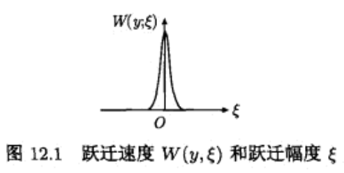

本笔记为阅读陈敏伯《统计物理》的读书笔记，包含大量基本概念与公式推导。按照本书前言所著，这本书大量使用变分原理进行推理基本公式。
第一章：引言
量子力学用以构建原子分子的微观性质，统计力学根据此微观性质进行解释从而得到理解体系的宏观性质，这就是统计力学的任务所在。
宏观量的统计性质
体系的宏观量（可直接或者间接观测的物理量）：
- 热力学变量（温度、密度、压强等）
- 热力学函数（内能、熵等）
- 体系的电磁性质
- 输运性质（扩散、粘度、热传导等）
- 速度分布和流体密度相关函数
宏观量应该是相应微观量的统计平均值。宏观量应该具备两个特征：
- 在空间尺度上，宏观量在宏观上足够小从而可以看出在宏观体系上的不均匀性质；但同时在微观上应该足够大，包含足够多的粒子，从而统计平均富有意义。
- 在时间尺度上，宏观量在宏观尺度上应该足够小，可以反应出在宏观尺度上随时间变化的情况；另一方在微观上应该是足够长的，包含了足够多次的微观变化。
基本概念
体系：物质世界中普遍存在着相互作用，从相互作用的众多物体中划分出来进行研究的那一部分称为体系。
环境：所有与上述体系存在相互作用而又不属于该体系的物体，统称为环境。体系与环境的划分由如何解决问题的方便决定。
体系分类： * 孤立体系：体系与环境无物质与能量的交换。 * 封闭体系：体系与环境仅有能量的交换，无物质交换。 * 开放体系：体系与环境存在物质与能量的交换。
广义坐标：描述问题的最小变量。即确定体系的独立变量，称为广义坐标（广义位置、lagrange位形）。记为： q(t) = (q1(t), q2(t)⋯qs(t))
广义动量：为确定整个体系在t时刻的力学状态，除了知道广义动量坐标以外还需要知道其下一时刻的运动方向，称为广义运动向量,记作q̇(t) = (q̇1(t), q̇2(t)⋯q̇s(t))。Hamilton更深刻的反应力学本质，除广义位移以外引入广义动量，定义为：
$$\begin{equation}p(t)=\frac{\partial L}{\partial \dot{q}(t)}\end{equation}$$
相空间：由x = (q, q̇)构成的空间称为相空间，记为Γ。描述一个粒子的相空间称为μ空间。
力学量：体系中任意可观测量（记为B）在体系的每个微观状态下都有确定的数值。
体系的宏观量：描述体系的平衡态实际上只要用少数宏观量即可。体积、压强、温度、能量、外磁场、外电场、电极化强度、磁极化强度等。
涨落：由于微观状态在剧烈变化，宏观会在平均值附近随机变动，这种变动称为涨落。
非平衡定态：经验表明，体系处于环境不变的情况下，经过一段时间后，体系必将达到一个宏观上不随时间变化的状态，尽管不一定是平衡态，但体系将长久的保持这种状态，这种状态称为非平衡定态（定态、稳态、定常态stationary state），描述为：$\frac{\partial \langle B\rangle}{\partial t}= 0$（注意，只是时间的偏导，而不是全导），例如：在两个具有稳定温差中形成的热流，是定态。
平衡态：处于定态体系，并且其环境的宏观状态宏观状态也不变，则这个体系称为处于平衡态。体系的所有宏观性质随时间不变化：$\frac{\partial \langle B\rangle}{\partial t}=0$。处于平衡态的体系，内部允许出现某种微观不均匀，但是不允许出现流（热流、粒子流等）。
非平衡态：体系所处的宏观状态，非上述的平衡态，均处于非平衡态。
弛豫过程：处于非平衡态的体系有自发趋向平衡态的趋势，这种从非平衡态到平衡态的过程称为弛豫过程。
广延量与强度量：描述体系所需的所有宏观参量。与体系质量有关的称为广延量，与体系质量无关的称为强度量。
外参量与内参量：宏观参量的另一种分类方法，只取决于环境而与体系无关的宏观量称为外参量，例如：体系体积、体系外形、外电场、外磁场；取决于体系内部粒子的特性以及运动状态的宏观参量，例如：体系的压力。
物态方程：系统处于平衡态时，内参量依赖于外参量。例如气体存在的关系：f(p, V, T) = 0。物质在其他形态下的物态方程，在工程界有时候也称为本构方程。
统计力学中体系力学描述的三种不同层次
Bogoliubov提出关于空间、时间上大致有三种不同尺度的描述方法，又称为三种标度。粒子间的相互作用力程Lint，粒子平均自由程Lτ和体系温度、密度等非均匀的量程Lh。
| 描述层次 | 特征长度 | 特征时间 | 以常温、常压氢气为例 |
|---|---|---|---|
| 微观层次 | 粒子间作用力程Lint | 相互作用持续时间τint | Lint = 10−8cm, τ = 5 × 10−14s |
| 动理学层次 | 粒子平均自由程Lτ | 弛豫时间τ | Lτ = 10−5cm, τ = 5 × 10−11s |
| 流体力学层次 | 非均匀性量程Lh | 非均匀性特征时间τh | Lh = 1cm, τh = 5 × 10−6s |
第二章：经典动力学
Lagrange函数
L(q, q̇, t) = T − U
以下讨论保守力体系，即F = −∇U，Lagrange函数可以写为： $$\begin{align} L(q,\dot q)&=T(\dot q)-U(q)=\frac{1}{2}\sum_{i=1}^{3N} m_i \dot{x_i}^2-U \\ &= \frac{1}{2}\sum_{i=1}^{3N}\sum_{k,l=1}^{s^2} m_i \frac{\partial x_i}{\partial q_k}\frac{\partial x_i}{\partial q_l}\dot{q}_k\dot{q}_l-U(q) \\ &= \frac{1}{2}\sum_{k,l=1}^{s^2} M_{kl} \dot{q}_k\dot{q}_l-U(q) \\ \end{align}$$
其中{x}称为d’Alembert位形，广义质量Nkl定义为： $$M_{kl}= \sum_{i=1}^{3N}m_i\frac{\partial x_i}{\partial q_k}\frac{\partial x_i}{\partial q_l}$$
最小作用量原理和lagrange方程
从最小作用量原理（Hamilton）导出Lagrange形式的经典力学。在相空间中，设体系在t1时刻从A点出发，经过某路径q(t)在t2时刻到达点B。对于每条可能的路径q(t)，可以定义作用量（action）为：
S[q(t)] = ∫t1t2L(q̇, q)𝕕t
可以看出作用量是一个标量，为路径的泛函。
最小作用量原理在理论上有很多条路径可以实现从A点到B点的目的，但是实际上只存在一条真是的路径，这条路径应当满足如下要求： qtrue = argminq{S[q(t)]}
从物理上理解，因为从A到B需要在相空间上需要满足能量最低原理。因此最小作用量原理本质上就是满足前者要求。
故而此问题成为一个有约束的变分问题。考虑路径上可能存在一个虚位移q(t) → q(t) + δq(t)，在A、B两点由于固定的原因，不存在虚位移δq(tA) = δq(tB) = 0。对作用量公式进行变分：
$$\begin{align} \delta S &=\int_{t_1}^{t_2}\mathbb{d}t\sum_{i=1}^{s}\{ \frac{\partial L}{\partial q_i}\delta q_i+\frac{\partial L}{\partial \dot{q}_i}\delta \dot{q}_i\} \\ &= \int_{t_1}^{t_2}\mathbb{d}t\sum_{i=1}^{s}\{ \frac{\partial L}{\partial q_i}\delta q_i+\frac{\partial L}{\partial \dot{q}_i}\delta \frac{d q_i}{dt}\} \\ &= \delta\frac{\partial L}{\partial \dot{q}_i} \frac{d q_i}{dt}|_{t_1}^{t_2} + \int_{t_1}^{t_2}\mathbb{d}t\sum_{i=1}^{s}\{ \frac{\partial L}{\partial q_i}\delta q_i-\frac{d}{dt}\frac{\partial L}{\partial \dot{q}_i}\delta q_i \} \\ &= \int_{t_1}^{t_2}\mathbb{d}t\sum_{i=1}^{s}\{ \frac{\partial L}{\partial q_i}-\frac{d}{dt}\frac{\partial L}{\partial \dot{q}_i} \} \delta q_i\\ \end{align}$$
得到最终的Lagrange方程： $$\frac{\partial L}{\partial q_i}-\frac{d}{dt}\frac{\partial L}{\partial \dot{q}_i}=0, \forall i=1,2,\cdots s$$
如果受到外力fiext，只需要在右边加上外力项： $$\frac{\partial L}{\partial q_i}-\frac{d}{dt}\frac{\partial L}{\partial \dot{q}_i}=f^{ext}_i, \forall i=1,2,\cdots s$$
Hamilton正则方程
利用勒让德变换（Legendre），将一组变量转化为另一组变量。将L(q̇, q, t)中的变量q̇变为$p_i = \frac{\partial L}{\partial \dot q_i}$，记p = {pi}，定义哈密顿量（Hamiltonian）：
$$\begin{equation}H(q,p,t)=\sum_{t=1}^{s}\dot q_ip_i - L(\dot q, q, t) \end{equation}$$
存在以下关系： $$\begin{align} \frac{\partial H}{\partial t}&=\frac{\partial (\dot q_ip_i)}{\partial t} -\frac{\partial L}{\partial t} \\ &= -\frac{\partial L}{\partial t} \\ \frac{\partial H}{\partial q_i}&=-\frac{\partial L}{\partial q_i} \\ \frac{\partial H}{\partial \dot q_i}&=0 = p_i -\frac{\partial L}{\partial \dot q_i} \\ \frac{\partial H}{\partial p_i}&= \dot q_i\\ \end{align}$$
将前两式代入Lagrange方程，可以得到： $$\begin{align} -\frac{\partial H}{\partial q_i}-\frac{d}{dt}p_i&=0, \forall i=1,2,\cdots s \\ \dot p_i &= -\frac{\partial H}{\partial q_i} \end{align}$$
得到Hamiltonian正则方程： $$\begin{align} \dot p_i &= -\frac{\partial H}{\partial q_i} \\ \dot q_i &= \frac{\partial H}{\partial p_i} \end{align}$$
最小作用量原理与Hamilton正则方程
Hamilton正则方程的导出，同样可以利用最小作用量原理得到。由式（7）、（8）和（13）可以得到：
$$\begin{align} \delta S &= \delta\int_{t_1}^{t_2}L\mathbb{d}t \\ &= \delta\int_{t_1}^{t_2}(\sum_{i=1}^{s}\dot q_ip_i-H)\mathbb{d}t \\ &= \int_{t_1}^{t_2}\mathbb{d}t\left( \sum_{i=1}^{s}\left(\delta \dot q_ip_i+\dot q_i\delta p_i\right)-\delta H\right) \\ &= \int_{t_1}^{t_2}\mathbb{d}t\left( \sum_{i=1}^{s}\left(\delta \dot q_ip_i+\dot q_i\delta p_i\right)-\left(\frac{\delta H}{\delta p}\delta p+\frac{\delta H}{\delta q}\delta q\right)\right) \\ &= \int_{t_1}^{t_2}\mathbb{d}t \sum_{i=1}^{s}\left(\delta \dot q_ip_i+\dot q_i\delta p_i-\frac{\delta H}{\delta p_i}\delta p_i-\frac{\delta H}{\delta q_i}\delta q_i\right)\\ &= \int_{t_1}^{t_2}\mathbb{d}t \sum_{i=1}^{s}\left(\delta \dot q_ip_i+\dot q_i\delta p_i-\dot q_i\delta p_i-\frac{\delta H}{\delta q_i}\delta q_i\right)\\ &= \int_{t_1}^{t_2}\mathbb{d}t \sum_{i=1}^{s}\left(\delta \dot q_ip_i-\frac{\delta H}{\delta q_i}\delta q_i\right)\\ &= \int_{t_1}^{t_2}\mathbb{d}t \sum_{i=1}^{s}\left(-\delta q_i\dot p_i-\frac{\delta H}{\delta q_i}\delta q_i\right)\\ \end{align}$$
根据δS = 0可以得出： $$\dot p_i=-\frac{\delta H}{\delta q_i}$$
概率分布函数与Liouville方程
把香农熵（shannon）作为统计力学基础，自然的把纯态和混合态的概念联合在一起。
经典力学的纯态和混合态
在经典力学中有两种描述方法：
- 纯态方法：将微观状态看为是相空间中的的一个相点，体系随时间的演化就是相空间中的一条曲线。这种观点把体系瞬时间所处的微观状态看成是单个纯粹的微观状态。
- 混合态方法：引入概率的思想，将体系瞬时间所处的状态，认为是以概率分布在一组微观状态的概率云上，用相空间的概率密度函数f(q(t), p(t), t)来描述。体系随时间的变化，就是这团概率云（概率密度函数）随时间的变化。
混合态描述是纯态描述的推广，纯态描述是混合态描述的特例。
从混合态的角度分析，概率的分布应该存在不确定度H。如果是纯态，那么必然是确定的Hmin = 0，不存在不确定度；如果是均匀的混合态，那么此时不确定度应改是最大的。因此不确定度应改满足以下的条件：
- 最小条件。当{pi}中只有一个结果的概率为1，其余均为0时，得到最大的信息量，最小的不确定度Hmin = 0。
- 最大值条件。当pi均为常数，信息量必为0，即最大不确定度H = Hmax。
- 对称条件。若交换两个结果的次序，不确定度不发生改变： H(⋯pi⋯pj⋯) = H(⋯pj⋯pi⋯)
- 加性条件。若将两个独立的随机变量A和B看成是一个联合事件，则联合事件给出的不确定性应当是各随机事件不确定性之和： H(A ∪ B) = H(A) + H(B)
针对以上条件shannon证明唯一解是： $$H=-K\sum_{j=1}^{n}p_j\ln p_j$$ K为任意常数。
概率分布函数
测不准原理表明，粒子微观状态在相空间中一个自由度上是占有一个宽度的△pi △ qi = h。对于自由度为s的粒子，一个粒子在微观状态中占有的体积，即“相胞”体积为$\prod_{i=1}^{s}\bigtriangleup p_i\bigtriangleup q_i=h^s$。只要粒子落入这个相胞内，便无法区分。
对于三维体系中N个粒子的体系，其体系相空间的相胞为h3N，再因为是全同的体系，可以得到一个相体积元代表的微观粒子数：
$$\mathbb{d}\Gamma=\frac{dpdq}{h^{3N}N!}=\frac{1}{h^{3N}N!}\prod_{1}^{N}dp_i dq_i$$
设t时刻体系微观状态在Γ相空间的相体积元dΓ中出现的概率为：
dw = f(q, p, t)dΓ
其中f(q, p, t)称为Γ相空间体系状态的概率分布函数，也称为系综分布函数，简称分布函数或者概率密度。
$$\begin{align} \int_{\Gamma}f(p,q,t)d\Gamma &= 1 \\ <A(t)>&=\int_{\Gamma}A(p,q)f(p,q,t)d\Gamma \end{align}$$
Liouvile方程
Liouvile方程：概率密度函数f(p, q, t)随时间的变化规律。
相点的速度为 $$v=\sum_{i=1}^{3N}\dot q_i\hat{q}_i+\sum_{i=1}^{3N}\dot p_i\hat{p}_i$$ 其中q̂, p̂是方向向量。
固定区域V内的状态点的增速： $$\frac{\partial}{\partial t}\int_V f d\Gamma$$
从固定区域V中流出的状态点速度： ∮Sds ⋅ vf = ∫VdΓ∇ ⋅ (fv) 其中ds是表面向量，规定方向为外法向。
因为Γ空间中不存在生成状态的源，也不存在消灭状态的黑洞。因此在一个区域中，流出的状态与增加的状态应该是一样的。因此存在关系： $$0=\frac{\partial}{\partial t}\int_V f d\Gamma+\int_V d\Gamma \nabla\cdot(fv)=\int_V d\Gamma\left(\frac{\partial f}{\partial t}+\nabla\cdot(fv)\right)$$
对于任意区域均成立，需要满足： $$\frac{\partial f}{\partial t}+\nabla\cdot(fv)=0$$
而$\frac{\partial f}{\partial t}=-\nabla\cdot(fv)=-\sum_{i=1}^{3N}\left(\frac{\partial (f\dot q_i)}{\partial q_i}+\frac{\partial (f\dot p_i)}{\partial p_i}\right)=-\sum_{i=1}^{3N}\left(\frac{\dot q_i\partial f}{\partial q_i}+\frac{f\partial \dot q_i}{\partial q_i}+\frac{\dot p_i\partial f}{\partial p_i}+\frac{f\partial \dot p_i}{\partial p_i}\right)=-\sum_{i=1}^{3N}\left(\frac{\dot q_i\partial f}{\partial q_i}+\frac{\dot p_i\partial f}{\partial p_i}\right)$再根据Hamilton正则方程可以得到：
$$\begin{align} \frac{\partial f}{\partial t} &= -\sum_{i=1}^{3N}\left(\frac{\dot q_i\partial f}{\partial q_i}+\frac{\dot p_i\partial f}{\partial p_i}\right) \\ &= -\sum_{i=1}^{3N}\left(\frac{ \partial f}{\partial q_i}\frac{\partial H}{\partial p_i}-\frac{\partial f}{\partial p_i}\frac{\partial H}{\partial q_i}\right) \\ &= \{H,f\} \end{align}$$
上述方程称为Liouvile方程。其中Poisson括号定义为$\{A, B\}=\sum_{i=1}^{3N}\left(\frac{ \partial A}{\partial q_i}\frac{\partial B}{\partial p_i}-\frac{\partial A}{\partial p_i}\frac{\partial B}{\partial q_i}\right)$
经典Liouville算符的形式解
形式解就是解析解。如果经典Liouville算符L与时间无关，并且f(q, p, t = 0)已知，可以得到$\frac{\partial f}{\partial t}|_{t=0}=(-iL)f|_{t=0}$，重复计算∞次得到$\frac{\partial^n f}{\partial t^n}|_{t=0}=(-iL)^n f|_{t=0}$，接下来将f(q, p, t)展开：
$$\begin{align} f(q,p,t)&=\sum_{n=0}^{\infty}\frac{t^n}{n!}(\frac{\partial^n f}{\partial t^n})_{t=0} \\ &=\sum_{n=0}^{\infty}\frac{t^n}{n!}(-iL)^nf|_{t=0} \\ &= e^{-iLt}f(q,p,0) \end{align}$$
因此：
f(q, p, t) = e−iLtf(q, p, 0)
力学量的时间演化
任意力学量A = A(q(t), p(t), t)的时间演化可以写为：
$$\begin{align} \frac{d A}{dt}&=\frac{\partial A}{\partial t}+\sum_{i=1}^{3N}(\frac{\partial A}{\partial q_i}\dot q_i + \frac{\partial A}{\partial p_i}\dot p_i) \\ &= \frac{\partial A}{\partial t}+\sum_{i=1}^{3N}(\frac{\partial A}{\partial q_i}\frac{\partial H}{\partial p_i} + \frac{\partial A}{\partial p_i}\frac{\partial H}{\partial q_i}) \\ &= \frac{\partial A}{\partial t}+ \{A, H\} \\ &= \frac{\partial A}{\partial t}+ iLA \end{align}$$
任意力学量的平均值
$$\begin{align} \frac{d \langle A\rangle}{dt}=\langle \frac{dA}{dt} \rangle \end{align}$$
不显含时间的物理量
如果A = A(q(t), p(t))那么：
$$\begin{align} \frac{d A}{d t}&=iLA \\ A(q(t), p(t)) &= e^{iLt}A(q(0),p(0)) \end{align}$$
经典演化算符、时间反演对称性
针对三维N粒子体系，Hamilton写为：
$$H(p,q)=\sum_{j=1}^{N} \frac{P_j^2}{2m_j}+U(q)$$
- Liouville算符的Hermite性 L† = L
- 典微观状态的时间演化。
演化状态的解析解为： x(t) = eiLtx(0) 其中，将eiLt称为经典传播子（classical prograpator），与量子力学中的e−iHt/ℏ相对应。传播子又称为演化算符。
记演化算符U(t1, t2) = U(t2 − t1) = eiL(t2 − t1)，即： U(t) = eiLt 于是有x(t) = U(t)x(0)
演化算符U(t)为酉算符。 U†(t)U(t) = 1
时间反演对称性。
时间反演对称：时间从0 → t的演化过程，与时间从t → 0的过程，满足相同的运动方程，称为具有时间反演对称性。
Hamilton方程具有时间反演对称性。传播子与时间反演对称性等价。 考虑正向过程x(t) = U(t, 0)x(0)，在考虑反向的传播过程： x(0) = U(0, t)x(t) = U(−t)U(t)x(0) = U†(t)U(t)x(0) = x(0)
约化分布函数
全同粒子体系的力学量的平均值
⟨B(t)⟩ = ∫B(x1, x2⋯xN)f(x1, x2⋯xN)dx1dx2⋯dxN 在处理全同体系的时候，任意交换两个粒子的时候，体系不变，具备如下的条件：
B(x1⋯xi⋯xj⋯xN) = B(x1⋯xj⋯xi⋯xN), ∀i ≠ j
这种交换对称性可以展开为： $$\begin{equation} B(x_1, x_2 \cdots x_N) = \sum_{n=0}^N B_n(x_1,x_2\cdots x_n) \end{equation}$$
其中： $$\begin{align} B_0 &= b_0 \\ B_1 &= b_1(x_1)+b_1(x_2)+\cdots +b_1(x_N)=Nb_1(x) \\ B_2 &= b_2(x_1, x_2)+\cdots+b_2(x_1, x_N)+b_2(x_2, x_3)+\cdots+b_2(x_2, x_N)+\cdots+b_2(x_{N-1}, x_N) \\ &= C_N^2 b_2(x_1, x_2)=\frac{N!}{2!(N-1)!}b_2(x_1, x_2) \\ B_n &= \frac{N!}{n!(N-n)!}b_n(x_1,x_2\cdots x_n) \end{align}$$
b2(x1, x2)是不能再分解为x1或者x2的单变量函数，直到，bn(x1, x2⋯xn)不能再分解为更少变量的函数。通过以上的构造，可以理解为转化为一种具备轮换对称性的基底，进行函数的展开。
在计算力学量平均值的时候： $$\begin{align} \langle B(t)\rangle &= \sum_{n=0}^N \langle B_n(x_1,x_2\cdots x_n)\rangle \\ &= \sum_{n=0}^N \frac{N!}{n!(N-n)!}\langle b_n(x_1,x_2\cdots x_n)\rangle \\ &= \sum_{n=0}^N \frac{N!}{n!(N-n)!} \int b_n(x_1, x_2\cdots x_n)f_n(x_1, x_2\cdots x_n)dx_1 dx_2\cdots dx_n \end{align}$$
Bogoliubov-Born-Green-Kirkwood-Yvon级联方程
Liouvile方程是关于N粒子的运动方程，涉及3N + 1个变量，蕴含的信息远超过宏观观测量需要的信息，有必要进行进一步的提取关键信息，即从分布函数f的规律求导n阶约化分布函数的fn的规律。
HN为该N粒子体系的Hamilton量，即： $$\begin{align} H_N=\sum_{i=1}^{N}\left [ \frac{p_i^2}{2m}+V_{ext}(r_i)\right ]+\sum_{i<j>}^{N}V_{i j}(r_i,r_j) \end{align}$$
其中Vext(ri)为第i个粒子受到的外势，Vij表示存在一个两体的相互作用。以下导出n阶约化分布函数fn的时间演化规律。
$$\begin{align} \frac{\partial f_n}{\partial t} &= \frac{\partial }{\partial t}\int f_N(x_1, x_2 \cdots x_N, t)d x_{n+1}dx_{n+2}\cdots dx_{N} \\ &= \int \frac{\partial }{\partial t}f_N(x_1, x_2 \cdots x_N, t)d x_{n+1}dx_{n+2}\cdots dx_{N} \\ &= \int \left \{ H_N, f_N\right \}d x_{n+1}dx_{n+2}\cdots dx_{N} \\ &= \int \left \{ \sum_{i=1}^{N}\left [ \frac{p_i^2}{2m}+V_{ext}(r_i)\right ], f_N\right \}d x_{n+1}dx_{n+2}\cdots dx_{N} +\int \left \{ \sum_{i<j}^{N}V_{i j}(r_i,r_j), f_N\right \}d x_{n+1}dx_{n+2}\cdots dx_{N} \end{align}$$
其中第一项有$\sum_{i=1}^N(\cdot)=\sum_{i=1}^n(\cdot)+\sum_{i=n+1}^N(\cdot)$，将上式第一项进行化简： $$\begin{align*} &\int \left \{ \sum_{i=1}^{N}\left [ \frac{p_i^2}{2m}+V_{ext}(r_i)\right ], f_N\right \}d x_{n+1}dx_{n+2}\cdots dx_{N} \\ &=\int \left \{ \sum_{i=1}^{n}\left [ \frac{p_i^2}{2m}+V_{ext}(r_i)\right ]+\sum_{i=n+1}^{N}\left [ \frac{p_i^2}{2m}+V_{ext}(r_i)\right ], f_N\right \}d x_{n+1}dx_{n+2}\cdots dx_{N} \\ &= \int \left \{ \sum_{i=1}^{n}\left [ \frac{p_i^2}{2m}+V_{ext}(r_i)\right ], f_N\right \}d x_{n+1}dx_{n+2}\cdots dx_{N} \\ &+ \sum_{i=n+1}^{N}\int \left \{ \left [ \frac{p_i^2}{2m}+V_{ext}(r_i)\right ], f_N\right \}d x_{n+1}dx_{n+2}\cdots dx_{N} \\ &= \int \left \{ \sum_{i=1}^{n}\left [ \frac{p_i^2}{2m}+V_{ext}(r_i)\right ], f_N\right \}d x_{n+1}dx_{n+2}\cdots dx_{N} \\ &+ \sum_{i=n+1}^{N}\int \left \{ V_{ext}(r_i), f_N\right \}d x_{n+1}dx_{n+2}\cdots dx_{N} \\ &+ \sum_{i=n+1}^{N}\int \left \{ \frac{p_i^2}{2m}, f_N\right \} d x_{n+1}dx_{n+2}\cdots dx_{N} \\ &= \int \left \{ \sum_{i=1}^{n}\left [ \frac{p_i^2}{2m}+V_{ext}(r_i)\right ], f_N\right \}d x_{n+1}dx_{n+2}\cdots dx_{N} \\ &+ \sum_{i=n+1}^{N}\int \sum_{k=1}^{N} \left [ \nabla_{r_k} V_{ext}(r_i)\nabla_{p_k}f_N - \nabla_{p_k} V_{ext}(r_i)\nabla_{r_k}f_N\right ]d x_{n+1}dx_{n+2}\cdots dx_{N} \\ &+ \sum_{i=n+1}^{N}\int \sum_{k=1}^{N}\left [ \nabla_{r_k}\frac{p_i^2}{2m}\nabla_{p_k}f_N-\nabla_{p_k}\frac{p_i^2}{2m}\nabla_{r_k}f_N\right ] d x_{n+1}dx_{n+2}\cdots dx_{N} \\ &= \int \left \{ \sum_{i=1}^{n}\left [ \frac{p_i^2}{2m}+V_{ext}(r_i)\right ], f_N\right \}d x_{n+1}dx_{n+2}\cdots dx_{N} \\ &+ \sum_{i=n+1}^{N}\int \sum_{k=1}^{N}\left [ \nabla_{r_k} V_{ext}(r_i)\nabla_{p_k}f_N -\nabla_{p_k}\frac{p_i^2}{2m}\nabla_{r_k}f_N\right ] d x_{n+1}dx_{n+2}\cdots dx_{N} \\ &= \int \left \{ \sum_{i=1}^{n}\left [ \frac{p_i^2}{2m}+V_{ext}(r_i)\right ], f_N\right \}d x_{n+1}dx_{n+2}\cdots dx_{N} \\ &+ \sum_{i=n+1}^{N}\int \left [ \nabla_{r_i} V_{ext}(r_i)\nabla_{p_i}f_N -\frac{p_i}{m}\nabla_{r_i}f_N\right ] d x_{n+1}dx_{n+2}\cdots dx_{N} \text{使用Guass公式消去}\\ &= \int \left \{ \sum_{i=1}^{n}\left [ \frac{p_i^2}{2m}+V_{ext}(r_i)\right ], f_N\right \}d x_{n+1}dx_{n+2}\cdots dx_{N} \\ \end{align*}$$
接下来讨论第二项，存在$\sum_{i < j}^N(\cdot)=\sum_{i < j}^n(\cdot)+\sum_{i=1}^n\sum_{j=n+1}^{N}(\cdot)$，那么：
$$\begin{align*} &\int \left \{ \sum_{i<j}^{N}V_{i j}(r_i,r_j), f_N\right \}d x_{n+1}dx_{n+2}\cdots dx_{N} \\ &= \int \left \{ \sum_{i<j}^{N}V_{i j}(r_i,r_j), f_N\right \}d x_{n+1}dx_{n+2}\cdots dx_{N} \\ &+ \int \left \{ \sum_{i=1}^{n}\sum_{j=n+1}^{N}V_{i j}(r_i,r_j), f_N\right \}d x_{n+1}dx_{n+2}\cdots dx_{N} \\ &= \int \left \{ \sum_{i<j}^{N}V_{i j}(r_i,r_j), f_N\right \}d x_{n+1}dx_{n+2}\cdots dx_{N} \\ &+ \int \sum_{i=1}^{n}\sum_{j=n+1}^{N}\nabla_{r_i}V_{i j}(r_i,r_j)\cdot\nabla_{p_i}f_Nd x_{n+1}dx_{n+2}\cdots dx_{N} \\ \end{align*}$$
最后得到： $$\begin{align} \frac{\partial f_n}{\partial t} &= \int \left \{ \sum_{i=1}^{n}\left [ \frac{p_i^2}{2m}+V_{ext}(r_i)\right ], f_N\right \}d x_{n+1}dx_{n+2}\cdots dx_{N} + \int \left \{ \sum_{i<j}^{N}V_{i j}(r_i,r_j), f_N\right \}d x_{n+1}dx_{n+2}\cdots dx_{N} + \int \sum_{i=1}^{n}\sum_{j=n+1}^{N}\nabla_{r_i}V_{i j}(r_i,r_j)\cdot\nabla_{p_i}f_Nd x_{n+1}dx_{n+2}\cdots dx_{N} \\ &= \int \left \{ H_n, f_N\right \}d x_{n+1}dx_{n+2}\cdots dx_{N} + \int \sum_{i=1}^{n}\sum_{j=n+1}^{N}\nabla_{r_i}V_{i j}(r_i,r_j)\cdot\nabla_{p_i}f_Nd x_{n+1}dx_{n+2}\cdots dx_{N} \\ &= \left \{ H_n, f_n\right \} + (N-n)\int \sum_{i=1}^{n}\nabla_{r_i}V_{i,j=(n+1)}\cdot\nabla_{p_i}f_Nd x_{n+1}dx_{n+2}\cdots dx_{N} \\ &= \left \{ H_n, f_n\right \} + (N-n)\int \sum_{i=1}^{n}\nabla_{r_i}V_{i,j=(n+1)}\cdot\nabla_{p_i}f_{n+1}dx_{n+1} \\ \end{align}$$
上述方程为级联方程，其将fn与fn + 1联系在一起。
平衡态系综
平衡态的系综原理，解决达到平衡态的体系热力学性质的微观解释。
微正则系综
等概率原理和微正则系综
孤立系统：体系与环境不存在任何形式的相互作用。
等概率原理（平衡态统计力学的唯一假设）：处于平衡态下的孤立系统，体系的各个可能的微观状态出现的概率相等。表现为： $$\begin{align} f=C\delta(E-H(q,p)) \end{align}$$ 其中C的定义为： $$\begin{align} 1=\int_{\tau}fdpdq=\lim_{\Delta E\to 0}C\int_{\Delta E} dqdp \end{align}$$
任意力学量的⟨B(q, p)⟩的系综平均值为： $$\begin{align} \langle B(q,p)\rangle=\int_{\tau}fB(q,p)dpdq=\lim_{\Delta E\to 0}C\int_{\Delta E} B(q,p)dqdp \end{align}$$
Poinacre定理
Poinacre回归定理：对于等能面内的体积有限大的宏观系统，假定其Hamilton量有界，则其|p|,|q|均有界。若时间t = 0时，体系从τ相空间的某点P0出发，则体系在一有限的时间T内，必然会经过P0点足够近的邻近点P′0，其距离小于任意小的预设正数ϵ，即|P0P′0| < ϵ。
等概率原理和最大熵原理
本节主要证明：最大熵原理等价于孤立系统达到平衡态后，体系微观状态在等能面上呈等概率分布的假设。
时刻t系综处于i态的样本数目Ni在dt时间中，离开与增加的变化量以及净变化量： $$\begin{align} (dN_i)_{-} &= \sum_{j(\neq i)}N_i P_{i\to j}dt \\ (dN_i)_{+} &= \sum_{j(\neq i)}N_j P_{j\to i}dt \\ dN_i &= (dN_i)_{+} - (dN_i)_{-} \\ &= \sum_{j(\neq i)}(N_j-N_i) P_{j\to i}dt \\ \frac{dN_i}{dt} &= \sum_{j(\neq i)}(N_j-N_i) P_{j\to i} \\ \end{align}$$
其中Pi → j表示从i跃迁到j的概率。同样可以得到： $$\begin{align} \dot p_i = \frac{dp_i}{dt} = \sum_{j(\neq i)}(p_j-p_i) P_{j\to i} \end{align}$$ 根据信息熵的定义，定义体系的量S:
$$\begin{align} S(t) &= -k_B\sum_i p_i(t)\ln p_i(t)=-k_B \langle \ln p_i(t) \rangle \\ \dot S &= -k_B\sum_i \dot p_i（\ln p_i+1）\\ &=-k_B\sum_i \dot p_i\ln p_i \\ &= -k_B\sum_i \sum_{j(\neq i)}(p_j-p_i) P_{j\to i}\ln p_i \\ &= -k_B\sum_i \sum_{j}(p_j-p_i) \ln p_i P_{j\to i}\\ &= \frac{-k_B}{2}\sum_i \sum_{j} \left [ (p_j-p_i) \ln p_i P_{j\to i} +(p_i-p_j) \ln p_j P_{i\to j}\right ]\\ &= \frac{k_B}{2}\sum_i \sum_{j} (p_i-p_j) (\ln p_i -\ln p_j)P_{i\to j}\\ \end{align}$$
因为Pi → j > 0，可知Ṡ > 0，S是一个恒增的量。当任意的跃迁量之间满足: $$\begin{align} p_i=p_j=\cdots=\frac{1}{\Omega} \end{align}$$ 就会有Ṡ = 0，达到最终的平衡态。即得到S的最大值，Gibbs熵： $$\begin{align} S=k_B \ln \Omega \end{align}$$
正则系综
正则系综：体积V、粒子数N和温度T恒定的体系，也称为(N, V, T)体系。
设{Hi}为体系的Hamilton量，对所有样本求和得到系综的Hamilton量Hens： $$\begin{align} H_{ens}=\sum_{i=1}^{N}H_i+\text{热交换项} \end{align}$$
当体系粒子数不太少，热交换项可以小到忽略。设样本的体系第j种状态的能量为Ej，又设系综中同属于第j种状态的样本体系数为nj。因此，对所有体系状态求和得到系综的总能量： $$\begin{align} \epsilon=\sum_{j}^{\text{state}}n_j E_j \end{align}$$
因为整个正则体系是孤立的，因此系综的能量ϵ是不变的。又对所有的体系状态nj求和，得到系综中的样本样本体系总数N，即： $$\begin{align} N=\sum_j^{\text{state}}n_j \end{align}$$
正则系综的最可几分布
在给定样本总数N和系综能量ϵ的约束条件下，寻找分布{nj}可以使得正则系综的微观状态W达到最大。按照排列组合的原理，给定分布{nj}，N个样本构成的正则系综的微观状态数为： $$\begin{align} W=\frac{N!}{\prod_j n_j !} \end{align}$$
本质是解决一个变分问题，在满足能量与样本数约束的条件下，寻找{ni}分布，使得W最大，可以写为： $$\begin{align} \Omega = \ln W-\alpha (\sum_j n_j-N)-\beta (\sum_j n_j E_j-\epsilon) \end{align}$$
利用Lagrange乘子法，极值时应满足： $$\begin{align} \frac{\delta \Omega}{\delta n_j}&=0,\forall j \\ \ln W &= \ln \left (\frac{N!}{\prod_j n_j !}\right) \\ &\simeq N\ln N-N-\sum_j (n_j\ln n_j-n_j) \\ \frac{\partial \ln W}{\partial n_j} &= -\ln n_j \\ \frac{\delta \Omega}{\delta n_j}&= -\ln n_j-\alpha-\beta E_j =0 \\ n_j^* &= e^{-\alpha-\beta E_j} \\ \end{align}$$
其中nj*表示最可几分布。因此，体系处于第j个态的概率为：
$$\begin{align} P_j &= \frac{n_j}{N} = \frac{e^{-\alpha-\beta E_j}}{\sum_i^{\text{state}}e^{-\alpha-\beta E_i}} \\ &= \frac{e^{-\beta E_j}}{\sum_i^{\text{state}}e^{-\beta E_i}} \\ &= \frac{e^{-\beta E_j}}{Z} \end{align}$$
其中Z是配分函数。 具体的物理量计算可以写为： $$\begin{align} \langle B\rangle = \sum_j P_j B_j = \frac{1}{Z}\sum_j B_j e^{-\beta E_j} \end{align}$$
正则系综中的热力学关系
- 体系平均能量 $$\begin{align} \langle E\rangle = \frac{1}{Z}\sum_j E_j e^{-\beta E_j} = -\left(\frac{\partial \ln Z}{\partial \beta}\right)_{N,V} \end{align}$$
- Helmholtz自由能 $$\begin{align}
\langle F\rangle = -\frac{1}{\beta}\ln Z
\end{align}$$
- 平均压强 $$\begin{align} \langle p\rangle = \frac{1}{\beta}\left(\frac{\partial \ln Z}{\partial V}\right)_{N,T} \end{align}$$
- 熵的期望值 $$\begin{align} \langle S\rangle &= \frac{\langle E\rangle}{Z}+k_B\ln Z = \frac{1}{\beta}\left(\frac{\partial \ln Z}{\partial T}\right)_{N,V} + k_B\ln Z \\ &= k_B \left [\frac{\partial (T\ln Z)}{\partial T}\right]_{N,V} \end{align}$$
- 正则系综的微观状态数 $$\begin{align} W^* &=\frac{N!}{\prod_j n_j^* !}= Z^N e^{-\beta \epsilon} \end{align}$$
- 化学势 $$\begin{align} \mu = \frac{-1}{\beta}\left(\frac{\partial \ln Z}{\partial N}\right)_{V,T} \end{align} $$
巨正则系综
巨正则系综：体积V固定，与环境存在能量与粒子数交换。体系的不变量为体积V、温度T、化学势μ。
设H(N)为该粒子数N的体系的Hamilton量，|N, j⟩为该体系第j个本征态，对应的能量为EN, j，存在： $$\begin{align} H(N)|N,j\rangle = |N,j\rangle E_{N,j} \end{align}$$
设{Hi}为样本体系的Hamilton量，对所有样本求和得到系综的Hamilton量HGCE为：
$$\begin{align} H_{GCE}=\sum_{i=1}^A+\text{相互作用} \end{align}$$ 当样本足够大的时候，可以认为相互作用项小到可以忽略。
设巨正则系综中同属于体系粒子数为N的第j个状态（能量为EN, j）的样本体系个数为aN, j，于是在巨正则系综中的所有样本都可以归属于不同的(N, j)值，所有的“GCE的量子态”可以用分布{aN, j}来表征。GCE态可以记为|{aN, j}⟩。由于整个巨正则系综可以看成一个孤立体系，所以根据统计力学假定，各个GCE的量子态|{aN, j}⟩出现的概率是相等的。
单组分GCE的最可几分布
单组分体系构成巨正则含有的微观状态数为： $$W(\{a_{N,j}\})=\frac{A!}{\prod_N\prod_j a_{N,j}!}$$
需要解决的问题是在怎样的分布下W达到最大？ 已经巨正则守恒条件（系综样本数𝒜、系综能量ϵ、系综总粒子数𝒩）为： $$\begin{align} \sum_N \sum_j a_{N,j} &= \mathcal A \\ \sum_N \sum_j a_{N,j} E_{N,j} &= \epsilon \\ \sum_N \sum_j a_{N,j}N &= \mathcal N \end{align}$$
数学目标为： maxaN, j(ln W)
Lagrange乘子法： $$\begin{align} \ln \Omega &= \ln W -\alpha\left( \sum_{N,j}a_{N,j}-\mathcal A\right)-\beta \left( \sum_N \sum_j a_{N,j} E_{N,j} - \epsilon\right) -\gamma \left( \sum_N \sum_j a_{N,j}N - \mathcal N\right) \\ \frac{\delta \ln \Omega}{\delta a_{N,j}} &= 0 \quad \forall N,j \\ \frac{\delta \ln W}{\delta a_{N,j}} &= \frac{\delta }{\delta a_{N,j}} \left[ \ln \mathcal A!-\sum_{N,j} (a_{N,j}\ln a_{N,j}-a_{N,j})\right]=-\ln a_{N,j} \\ \frac{\delta \ln \Omega}{\delta a_{N,j}} &= -\ln a_{N,j}-\alpha -\beta E_{N,j}-\gamma N = 0 \quad \forall N,j \\ \end{align}$$
因此最可几分布为：
aN, j* = e−(α + βEN, j + γN) ∀N, j
其中利用样本数守恒计算e−α： $$\begin{align} \sum_{N,j} a_{N,j} &= \mathcal A=e^{-\alpha}\sum_{N,j} e^{-(\beta E_{N,j}+\gamma N)} \\ e^{-\alpha} &= \frac{\mathcal A}{\sum_{N,j} e^{-(\beta E_{N,j}+\gamma N)}} \\ \end{align}$$
定义巨配分函数Ξ为： Ξ(V, β, γ) = ∑N, je−(βEN, j + γN)
因此系综的最可几分布： $$a_{N,j} = \mathcal A \frac{e^{-(\beta E_{N,j}+\gamma N)}}{\Xi}$$ 粒子数为N的第j个状态出现的概率为： $$P_{N,j} = \frac{e^{-(\beta E_{N,j}+\gamma N)}}{\Xi}$$
多组分GCE的最可几分布
Lagrange待定乘子β的确定
$$\beta = \frac{1}{k_B T}$$ ### Lagrange待定乘子γ的确定 $$\gamma_i = \frac{-\mu_i}{k_B T}$$ ## 等温等压系综
近独立子体系的统计热力学
系综理论具体应用：使用系综理论处理独立子体系和近独立子体系。
独立子体系和近独立子体系
从组成粒子的三个角度对宏观体系进行分类，粒子是单组份还是多组分、粒子的位置是否固定、粒子之间是否存在相互作用：
- 按组成粒子的种类分类。单组分为全同粒子体系，多组分为混合粒子体系。
- 按组成粒子的位置是否固定。位置不固定的称为离域子体系，例如气体；位置固定称为定域子体系，例如晶体。
- 按有无相互作用分类。粒子之间没有相互作用称为独立子体系；微粒之间存在相互作用称为相倚子体系；粒子之间相互作用非常小，例如气体，称为近独立子体系。
粒子的配分函数
对于只有一个粒子的体系，可以认为是一个正则系综: $$\begin{align} q\equiv \sum_j^{\text{state}}e^{-\beta \epsilon_j} = \sum_k^{\text{level}}g_k e^{-\beta \epsilon_k} \end{align}$$
其中gk为能级简并度，前一个加和是对状态的加和，后一个加和是对能级的加和。
现在讨论由N个单组分全同粒子组成的近独立子体系。有离域与定域两种情况，首先讨论定域的情况。 既然不存在相互作用，每个格点处都有q个花样，因此体系的配分函数为： Q = qN 对于离域的情况，由于粒子间可以轮换，因此需要排除重复计算的项： $$Q=\frac{q^N}{N!}$$
由上面可知，分析配分函数的关键是知道{ϵk, gk}（粒子能谱）。接下来分析单个粒子的运动
分支骨架的运动状态、简单体系的量子力学解
分子的运动包括分子质心的平动运动、分子绕质心的转动、分子内部组成原子之间的振动和体系电子状态跃迁。 首先考虑电子运动，电子质量远小于核，因此当核发生变化的时候，电子可以快速运动适应核的变化，但核对电子的运动却不敏感。因此Born-Oppenheimer近似将运动其分为两部分，分别是核的薛定谔方程与固定核骨架之后的解电子的薛定谔方程。
对于分子的平动、转动和振动都是核的运动，可以用经典力学或者量子力学求解（在经典近似之后可以得到经典的结果，离散状态变为连续状态）。这三种运动无论多么复杂都可以归结为三种基本的模型：三维盒中的只有平动粒子、刚性转子和一维简谐运动。
此处省略对这三种情况的量子力学解。
分子配分函数的析因子性
假定分子的各种运动形态之间互为独立，则能量的加和性和简并度的乘积性会使子的配分函数q总可以写成各种运动形态的（子的）配分函数qk的乘积，q = ∏kqk，称之为子的配分函数的析因子性。
根据子的配分函数析因子性，只要用量子力学求得分子的每一种运动形态的能谱{ϵj}，继而依次求得该种运动的子的配分函数qk和子的配分函数q。再求得独立定域（离域）子体系的配分函数Q。然后求出所有物理量的系综均值。
粒子平动、振动、转动的配分函数
讨论粒子平动、振动、转动的配分函数。
Bose子、Fermi子和Boltzmann子
- Bose子：每个能量状态上没有容纳粒子数限制，光子、声子。
- Fermi子：每个能量状态上最多只能容纳一个粒子，电子、质子、中子。
- 全同离域Boltzmann子（Boltzon）：当能级简并度远大于占有该能级的粒子数，此时Bose子与Fermi子之间的差距已经不起作用，两者趋同。即量子效应消失，这时就是经典情况。
配分函数的经典表述
三维平动子配分函数的经典表述
刚性转子配分函数的经典表述
一维谐振子配分函数的经典表述
平动子体系的分布函数
理想气体的热力学量
晶体的定容热容、Einstein与Debye模型
双原子分子的运动成分及其对称性
能均分定理、双原子分子气体的热容
多原子分子气体的运动和配分函数
多原子分子气体的分布函数
化学平衡的统计理论
反应速度理论中的统计理论
平衡态系综原理在化学中的应用
固体的状态方程
外磁场中的气体
气固吸附
吸附竞争
非理想气体
相关函数
- 相关或关联（correlation）：物理量在时间或者空间上存在相互联系。
- 空间相关函数（space correlation function, SCF）：在体系的某一空间位置处的某种性质通过粒子间的相互作用，对另外一个空间位置处的另一种（或同一种）性质造成影响的程度，体现这两个量在空间上的联系。
- 相关长度（correlation length）：表征一空间相关性的空间尺度。
- 时间相关函数（time correlation function, TCF）：体系在受到环境的某种作用，造成对体系某时刻的某个物理量与此后某时刻的另一个（或同一个）物理量之间的相互影响。
- 相关时间(correlation time)：表征时间相关性的时间尺度。
- 空间自相关函数（auto-SCF）：与另一处的同一物理量的联系。
- 空间交叉相关函数（cross-SCF）：与另一处的不同一物理量的联系。
空间相关函数
体系处于平衡态，物理量的涨落为： $$\begin{align} \Delta A(r) \equiv A(r) - \langle A(r) \rangle \end{align}$$ 显然处于平衡态的体系涨落为零： $$\begin{align} \langle \Delta A(r) \rangle = \langle A(r) - \langle A(r) \rangle \rangle = 0 \end{align}$$ 但是涨落平方的系综平均值具有确定数值，设为a，即： $$\begin{align} \langle (\Delta A(r))^2 \rangle = \langle [A(r) - \langle A(r) \rangle]^2 \rangle = a \end{align}$$ 假定不存在外场，则处于平衡态的体系应当是均匀的，于是a与位置无关。
对于体系内的两个空间位置r与r′，位置r处的物理量A(r)和另一个位置r′处的另一个物理量B(r′)的乘积的系综平均值为： $$\begin{align} \langle A(r) B(r')\rangle \equiv C_{AB}(r,r') \end{align}$$ 称为这两个量的空间相关函数，描述不同位置上的两个物理量之间的联系，“乘积”反映某种平均化后的特征。 其中一个特例，如果描述的两个物理量相同，称之为空间的自相关函数： $$\begin{align} \langle A(r) A(r')\rangle \equiv C_{AA}(r,r') \end{align}$$
对于平衡态来说，因为具有均匀性，相关函数的绝对位置是不重要的，重要的是相对位置（具有空间位置平移不变性）： $$\begin{align} \langle A(r)B(r')\rangle = \langle A(r-r')B(0) \rangle \end{align}$$
进一步，如果体系是各向同性，则相关函数与位置向量无关，仅与两点间距|r − r′|有关，一般来说，在一个距离ξ内，空间相关性CAB值不小，而大于ξ之后相关性变得很小，则长度ξ可作为空间相范围的度量，称之为相关长度。
位置的概率密度、动量的概率密度
数密度及其涨落的空间相关函数
N个全同粒子体系的俄数密度ρ(r)指位置r处单位体积中的粒子个数，即ρ(r)dr为体积元dr中的粒子个数，经典力学意义上可以表示为： $$\rho(r)=\sum_{i=1}^N\delta(r-r_i)$$
体系数密度ρ(r)的系综平均值为： $$\begin{align} \langle \rho(r)\rangle &= \int dr\rho(r)f_N(r_1\cdots r_N)=\int dr \sum_{i=1}^N\delta(r-r_i)f_N(r_1\cdots r_N) \\ &= N\int dr_1 \delta(r-r_i) \int dr_2\cdots r_N f_N(r_1\cdots r_N) \\ \end{align}$$ 引入定义： f1(r1) ≡ V∫dr2⋯rNfN(r1⋯rN) 可得： $$\begin{align} \langle \rho(r)\rangle &= N \int dr_1\delta(r-r_1)\frac{1}{V}f_1(r_1)=\frac{N}{V}f_1(r) \\ &= \rho f_1(r) \end{align}$$
其中f1(r)的物理含义为；不管其它粒子的分布情况，有一个粒子出现在r处的概率再乘以体积。对于均匀体系，这个概率分布显然与位置无关并且等于$\frac{1}{V}$，即对于均匀系： $$\begin{align*} \int d_2\cdots d_N f_N(r_1\cdots r_N)&=\frac{1}{V} \\ f_1(r) &= 1 \end{align*}$$
接下来讨论数密度的空间相关性。 $$\begin{align} \langle \rho(r)\rho(r')\rangle &= \int dr \rho(r)\rho (r') f_N(r_1\cdots r_N) \\ &= \int dr_1\cdots dr_N \sum_{i=1}^N\sum_{j=1}^N\delta(r-r_i)\delta(r'-r_j)f_N(r_1\cdots r_N) \\ &= \int dr_1\cdots dr_N \left[ \sum_{i=1}^N\delta(r-r_i)\delta(r'-r_i)+\sum_{i\neq j}\delta(r-r_i)\delta(r-r_j)\right]f_N(r_1\cdots r_N) \\ &= \rho \delta(r-r')+N(N-1)\int dr_1 dr_2 \delta(r-r_1)\delta(r'-r_2) \int dr_3\cdots dr_N f_N(r_1\cdots r_N) \\ &= \rho \delta(r-r')+\frac{N(N-1)}{V^2}\int dr_1 dr_2 \delta(r-r_1)\delta(r'-r_2) f_2(r_1, r_2) \\ &= \rho \delta(r-r') + \rho^2 f_2(r_1, r_2) \end{align}$$
其中定义f2为： f2(r1, r2) ≡ V2∫dr3⋯drNfN(r1⋯rN)
- 如果两点距离很大，可认为两点是独立的，即: lim|r1 − r2| → ∞f2(r1, r2) = 1
- 在均匀体系中有： f2(r1, r2) = f2(r2, r1) 进一步为各项同性体系： f2(r1, r2) = f2(|r1, r2|)
- 均匀体系数密度涨落的空间自相关函数。均匀体系的数密度涨落为： $$\begin{align} \Delta \rho(r)&\equiv \rho(r)-\rho \\ \langle \Delta\rho(r)\Delta\rho(r')\rangle &=\langle \rho(r)\rho(r')\rangle-\rho^2 \\ &= \rho \delta(r-r') + \rho^2 [f_2(r_1, r_2)-1] \end{align}$$
正则系综中的空间相关函数
具体分析N个子的正则离域体系，其中其Hamilton为： $$H = \frac{1}{2m}\sum_{i=1}^Np_i^2+U_N+\sum_{i=1}^N\epsilon$$ 其中第一项为总动能，第二项为相互作用，第三项为粒子内部的能量项。 ### 约化分布函数 ### 径向分布函数 ### 直接相关函数和Ornstein-Zernike方程
时间相关函数
- 时间相关函数（TCF）：描述前后不同时刻两个物理量之间的相关关系。
- 相关时间（correlation time）：表征相关性在时间上的尺度。
定义时间相关函数⟨B(0)C(t)⟩: $$\begin{align} \langle B(0)C(t)\rangle \equiv \lim_{T\to \infty}\frac{1}{T} d\tau B(\tau) C(\tau+t) \end{align}$$
时间相关函数表述物质运动在时间先后上的相关关系，具备如下的性质： 1. 由于人一物理量在本质上必须是实数，因此时间相关函数必须是实数。 2. limt → ∞⟨B(0)C(0)⟩ = 0，两个时间间隔无穷远的事件自然不相关了。 表示怀疑，真的是这样么？
非平衡定态时的时间相关函数
非平衡定时，还具备如下的性质： 1. 时间平移不变性。物理量的相关性在该种状态下，只与相对的时间差有关，而与具体的时刻无关： $$\begin{align} \langle B(t_1)C(t_2) \rangle &= \langle B(t_1-\tau)C(t_2-\tau) \rangle \\ \langle B(t_1)C(t_2) \rangle &= \langle B(0)C(t_2-t_1) \rangle \end{align}$$ 2. 非平衡定态。 $$\begin{align} \langle \dot B(t)C(0)\rangle = -\langle B(t)\dot C(0)\rangle \end{align}$$
平衡态时间自相关函数的性质
平衡态时的时间自相关函数 ⟨CBB(t1, t2) ≡ ⟨B(t1)B(t2)⟩，具有如下性质： 1. 时间平移不变性。自相关函数只与时间间隔τ ≡ t1 − t2有关: $$\begin{align*} C_{BB}(t_1, t_2) &\equiv \langle B(t_1)B(t_2)\rangle = \langle B(0)B(t_2-t_1)\rangle \\ &= \rangle = \langle B(0)B(\tau)\rangle \equiv C_{BB}(\tau) \end{align*}$$ 2. CBB(0) > 0。 3. 对于任意的时间τ，CBB(τ)的绝对值不可能大于τ，CBB(0)： |CBB(τ)| < CBB(0) 4. CBB(−τ) = CBB(τ) 5. 相关时间τB，当间隔时间远大于相关时间之后，时间相关性趋于0： limτ > > τBCBB(τ) = 0
时间相关函数的应用
量子动力学
连续介质力学
非平衡态统计力学分为多种形式理论： * 微观层次 * 动理学层次 * 流体力学层次 以上三个层次，逐渐粗粒化。在流体力学层次，先将处理的体系设想为连续介质，然后用连续介质来研究这一层次的问题。
基本概念
压强张量和应力张量
粘性液体或者固体中任意单位截面上受到的力不一定在该截面的法向上，需要拓展为张量利用9个标量描述，称为压强张量P ≡ {pαβ|α, β = x, y, z}，在直角坐标系下写为： $$\begin{align} P= \begin{bmatrix} p_{xx} & p_{xy} & p_{xz}\\ p_{yx} & p_{yy} & p_{yz}\\ p_{zx} & p_{zy} & p_{zz}\\ \end{bmatrix} \end{align}$$
应力张量σ取反方向：σ ≡ −P，定义法向量$\bf n$，该界面上面的力$\bf\sigma_n$为： $$\bf{\sigma_n} =\sigma \cdot \bf n$$ 同时，应力张量为：
$$\sigma = \sum_{i,j=1}^3\sigma_{ij}e_ie_j \triangleq \sigma_{ij}e_ie_j$$
其中≜是Einstein求和符号。
应变张量
以下讨论物体受力后体内粒子位置发生的相对改变。
体内无限接近的两点P Q，形变前向量$\overrightarrow{PQ}\equiv dr = \sum_{i=1}^3dx_ie_i$，形变后成为向量$\overrightarrow{P'Q'}\equiv dr'=dr+du = \sum_{i=1}^3(dx_i+du_i)e_i$，位移变量du = dr′ − dr。
$$\begin{align} |dr'|^2 &= \sum_{i=1}^3(dx_i+du_i)^2 = \sum_{i=1}^3(dx_i+\sum_{k=1}^3\frac{\partial u_i}{\partial x_k}dx_k)^2 \\ &= \sum_{i=1}^3 \left[ (dx_i)^2 +2dx_i\sum_{k=1}^3\frac{\partial u_i}{\partial x_k}dx_k+\left(\sum_{k=1}^3\frac{\partial u_i}{\partial x_k}dx_k\right)^2\right] \\ &= |dr|^2 + 2\sum_{i=1}^3dx_i \sum_{k=1}^3\frac{\partial u_i}{\partial x_k}dx_k + \sum_{i,k,l=1}^3\frac{\partial u_i}{\partial x_k}\frac{\partial u_i}{\partial x_l}dx_kdx_l \\ &= |dr|^2 + 2\frac{\partial u_i}{\partial x_k}dx_kdx_i + \frac{\partial u_i}{\partial x_k}\frac{\partial u_i}{\partial x_l}dx_kdx_l \\ &= |dr|^2 + \left(\frac{\partial u_i}{\partial x_k}+\frac{\partial u_k}{\partial x_i}+\frac{\partial u_l}{\partial x_l}\frac{\partial u_i}{\partial x_i}\right) dx_kdx_l \\ &= |dr|^2 + 2\epsilon_{ij} dx_kdx_l \end{align}$$
其中令： $$\epsilon_{ij}\equiv \left(\frac{\partial u_i}{\partial x_k}+\frac{\partial u_k}{\partial x_i}+\frac{\partial u_l}{\partial x_l}\frac{\partial u_i}{\partial x_i}\right)$$
对角元称为正向应变，非对角元称为切向应变或者剪应变。在应变比较小的情况下，二阶微分项远小于一阶相，可以忽略。因此： $$\begin{align} \epsilon_{ij} &\approx \left(\frac{\partial u_i}{\partial x_k}+\frac{\partial u_k}{\partial x_i}\right) \\ \epsilon &= \frac{1}{2}\left[\nabla u+\nabla u^T\right] \end{align}$$
广义Hooke定律
在连续形变之后，应力张量σ可普世的认为是应变张量的俄ϵ函数，即σ(ϵ)。在无初应力且应变较小的情况下，略去高次项得： $$\sigma_{ij}=\left( \frac{\partial \sigma_{ij}}{\partial \epsilon_{kl}}\right)_0\epsilon_{kl}$$
其中下标为0表示在应变为0处取值。
当形变较小的时候，饰演的应力与应变值之间服从Hooke定律，将偏微分关系变为线性关系： σij = Cijklϵlk
形变能
各项同性介质的形变能
各项同性介质的应力张量
流体力学
流体力学就是连续介质力学。Newton粘性公式，剪切应力$\tau\equiv \frac{f}{\delta S}$正比于切向速度： $$\tau=\eta \frac{dv}{dy}$$
流体的运动方程
流体的连续性方程：
$$\begin{align} \frac{\partial \rho_m}{\partial t}+\nabla\cdot \bf j &=0 \\ \bf{j}(r,t) &= \rho_m \bf m \\ \end{align}$$
理想流体的运动方程： $$\rho_m \frac{Dv}{Dt}=\rho_m(\frac{v}{t}-v\cdot\nabla v)=-\nabla\cdot P$$
连续介质的导热
Fourier唯象导热定律： $$\begin{align} q=-\lambda\nabla T \end{align}$$
非平衡热力学基础
局域平衡近似
非平衡态的体系有相新的平衡态趋近的趋势，这样的过程称为弛豫过程，弛豫时间记为τmac。
局域平衡近似是将非平衡的体系分为很多的小部分，其中每一个小部分具备宏观小微观大的特点，宏观小足够反省非平衡态在宏观上的不均匀性，微观大包含足够多的粒子。其中每一个小块，可以认为是这一个小块是均匀的，可以用平衡态的状态参量描述。不同小区域与邻近区域之间的相互作用很弱，微区与微区之间不满足平衡条件，记微区的弛豫时间为τmic。
局域平衡近似成立有两个条件： * τmic ≪ τmac * lmic ≪ lmac，其中lmac为局域平衡成立的空间微观程度，lmac为外力作用造成体系热力学量的波动宏观尺度。
不可逆过程中的平衡方程
使用连续介质力学的方案得到非平衡态热力学的平衡（即衡算）方程。在一定的尺度范围内，可以将任何不平衡体系看成连续介质。
设有一个宏观体系，体积为V，边界为Σ，讨论体系宏观广延量F(t)随时间的演化：
F(t) = ∫Vρm(r, t)f(r, t)dr
其中ρm(r, t)为密度质量，f(r, t)为单位质量的广延量，因此ρmf为单位体积的广延量。
讨论的体系包含化学反应，因此体系中有源和汇，设σF(r)是体系的源密度（r处产生F的量/体积/时间），正表示源，负表示汇。有以下的平衡方程： $$\begin{align} \frac{dF(t)}{dt} &= P[F] + \phi[F] \\ P[F] &\equiv \int_V \sigma_f dr \\ \phi &\equiv -\oint_{\Sigma}j_F \cdot dS \\ \frac{dF(t)}{dt} &= \frac{d}{dt}\int_V \rho_m (r,t)f(r,t)dr = \int_V\frac{\partial}{\partial t}(\rho_m f)dr \\ &= \int_V \sigma_F dr - \oint_{\Sigma}j_F\cdot dS \\ \int_V\frac{\partial}{\partial t}(\rho_m f)dr &= \int_V \sigma_F dr - \int_{V}\nabla \cdot j_F dv \\ \sigma_F &= \frac{\partial}{\partial t}(\rho_m f)+\nabla \cdot j_F \\ \end{align}$$
称为广延量F的局域平衡方程。其中ρmf是单位体积的广延量F（即F量/体积），σF广延量F的源密度（F产生的量/面积/时间），jF是广延量F的流密度（F的通过量/面积/时间）也称为流或者通量。
以下讨论几个重要的具体广延量的平衡：质量、动量、能量、角动量和熵。
连续介质中的质量守恒
从微体积净增的物质的量一定等于从它外部流入到该微体积的物质的量，称为质量平衡或者质量横算。因为无源σF = 0, f = 1, jF = ρmv。
$$\begin{align} 0 &= \frac{\partial}{\partial t}(\rho_m)+\nabla \cdot (\rho_m v) \end{align}$$
连续介质中的动量平衡
质量流ρmv可以理解为该处的动量密度，因此ρmvv为该处流体内的动量流。虽然其与能量密度的量纲相同，但是动量流为张量，能量密度是标量。流体的动量为： $$\begin{align} G=\int_v \rho_m vd^3 r \end{align}$$ 受到外力后，该体积内流动的动量就增加。单位时间内动量的增值就是该体积V所受的外力，即： $$\begin{align} F\equiv \frac{d G}{d t}=\int_v \frac{\partial \rho_m v}{\partial t} d^3 r \end{align}$$
接下来还有具体讨论，暂且跳过
连续介质中的能量守恒
核心为分析功率，总功率分为三个部分：应力、质量、传热
局域熵、不可逆过程的熵产生率
数学上，散度表示流出
因为非平衡态的假设是将整个区域分割为小的平衡区域。针对每个小的平衡区域，认为熵的变化分为两部分，分别为平衡体系内熵的变化，以及不同体系内熵的流动。
局域熵的产生率σs均可由局域热力力量Xi和由它造成的（称为：与之为共轭的）局域流Ji的标积，Xi称为广义力，Ji称为广义流。局域熵产生率σs可表示为：
$$\begin{align} \sigma_s = \sum_i X_i\cdot X_i \end{align}$$
Onsager关系
将局域流Ji按局域力{Xj}展开，取最低的线性近似得到： $$\begin{align} J_i = \sum_j L_{ij} X_j \end{align}$$ 其中Lij就是各种输运系数。
Onsager关系为： $$\begin{align} L_{ij} = L_{ji}, L^T = L \end{align}$$ Lij为对称矩阵。
熵产生极小定理
熵产生极小定理：对处于稳态的非平衡体系，其熵产生率处于极小值。
涨落理论
广义涨落有两大类： * 无论在平衡态还是非平衡态，体系宏观量瞬时值在其平均值上下快速变动。为狭义的涨落。 * Brown运动。
涨落基本概念
设B为热力学平衡态体系的任意宏观物理量。设体系处于第j个量子态时，该物理量取值Bj，所以物理量B的宏观值就是对量子态的平均值：
< B > = ∑jPjBj
其中Pj为该量子态出现的概率，为方便在不混淆的情况下，省略Bj的下标，记为B。于是体系处于某平衡态的偏差与相对偏差为： $$\begin{align} \Delta B &\equiv B - <B> \\ r_B &\equiv \frac{\Delta B}{<B>} \end{align}$$
因为 < ΔB > = 0恒成立，为了表征涨落的程度，需将偏差的平方对量子态求平均值，称为B在系综中的均方涨落，简称涨落： $$\begin{align} <(\Delta B)^2> &\equiv \sum_j P_j - (\Delta B)^2 =\left < (B-<\Delta B>)^2\right> \\ &= \sum_j P_j\left(B_j-\langle B\rangle\right)^2=\sum_j P_j B_j^2-2 \sum_j P_j B_j\langle B\rangle+\sum_j P_j\langle B\rangle^2 \\ &= \langle B^2\rangle -\langle B\rangle^2 \end{align}$$
其中⟨B2⟩为物理量B2的均值，或B的均方值。同样，相对偏差平方的均值可表为：
$$\begin{equation} \begin{aligned} \left\langle r_B^2\right\rangle &\equiv\left\langle\left(\frac{\Delta B}{\langle B\rangle}\right)^2\right\rangle=\frac{\left\langle(\Delta B)^2\right\rangle}{\langle B\rangle^2}=\frac{\left\langle(B-\langle B\rangle)^2\right\rangle}{\langle B\rangle^2} \\ &= \frac{\langle B^2\rangle}{\langle B\rangle^2}-1 \end{aligned} \end{equation}$$
称为热力学量B的相对涨落。
在连续谱时候的情况
涨落理论
正则系综中的涨落
正则系综存在与环境的热交换，因此(N, V, T)恒定，体系存在能量E的涨落，能量均值： $$\begin{align} \langle E\rangle &= \sum_j E_j P_j=\frac{1}{Z}\sum_j E_j (\Omega_j e^{\frac{-E_j}{k_B T}}) \\ \langle E\rangle Z &= \sum_j E_j (\Omega_j e^{\frac{-E_j}{k_B T}}) \\ \end{align}$$ 两边被$\left( \frac{\partial}{\partial T}\right)_{V,N}$作用得到： $$\begin{equation} Z\left(\frac{\partial\langle E\rangle}{\partial T}\right)_{V, N}+\langle E\rangle\left(\frac{\partial Z}{\partial T}\right)_{V, N}=\frac{1}{k_{\mathrm{B}} T^2} \sum_j E_j^2\left(\Omega_j \mathrm{e}^{-E_j /\left(k_{\mathrm{B}} T\right)}\right)=\frac{Z\left\langle E^2\right\rangle}{k_{\mathrm{B}} T^2} \end{equation}$$
根据$\langle E\rangle=k_B T^2\left( \frac{\partial \ln Z}{\partial T}\right)_{V, N}$得到$\left( \frac{\partial Z}{\partial T}\right)_{V, N}=\frac{Z}{k_B T^2}\langle E\rangle$，因此： $$\begin{align} \left(\frac{\partial\langle E\rangle}{\partial T}\right)_{V, N} = \frac{1}{k_B T^2}\left[\langle E^2\rangle-\langle E\rangle^2\right] \end{align}$$
根据定容热容$C_V = \left(\frac{\partial\langle E\rangle}{\partial T}\right)_{V, N}$，可以得到正则系统的能量涨落和能量的相对涨落分别为： $$\begin{equation} \begin{gathered} \left\langle(\Delta E)^2\right\rangle=\left\langle E^2\right\rangle-\langle E\rangle^2=k_{\mathrm{B}} T^2\left(\frac{\partial\langle E\rangle}{\partial T}\right)_{V, N}=k_{\mathrm{B}} T^2 C_V \\ \left\langle r_E^2\right\rangle=\frac{\left\langle(\Delta E)^2\right\rangle}{\langle E\rangle^2}=\frac{1}{\langle E\rangle^2} k_{\mathrm{B}} T^2\left(\frac{\partial\langle E\rangle}{\partial T}\right)_{V, N}=k_{\mathrm{B}} T^2 \frac{C_V}{\langle E\rangle^2} \propto \frac{1}{N} \end{gathered} \end{equation}$$
巨正则系综中粒子数能能量的涨落
平衡态开放体系中的自发涨落、Onsager的涨落回归假设
讨论平衡态开放体系的中的任意动力学量出现的自发涨落是自然的，但是更重要的一层意义是它的讨论有助于理解非平衡态。
Onsager注意到有两种弛豫过程： * 平衡态在没有外场干预的条件下，内部分子的热运动引起动力学量的自发涨落：不断偏离均值再回归均值。（微观弛豫） * 当体系受到某种外场作用，使之成为一个宏观的非平衡状态，若突然终止该外场，则体系将通过弛豫过程趋于平衡态。（宏观弛豫）
Onsager假设这两种弛豫过程服从相同的规律，称为涨落回归假设。后来人们意识到，Onsager的假设在力学上有深刻的原因，即1951年Callen和Welton证明涨落耗散定理。
以下先用经典理论讨论平衡体系中的自发涨落问题。
非平衡态的系综平均
上述Onsager假设联系两种驰豫，前者是平衡态的自发涨落弛豫，其系综平均记为⟨⋅⟩；后者是非平衡态的宏观弛豫，其系综平均记为$\overline{\left(\cdot\right)}$，在时刻t的瞬时系综平均值记为$\overline{A}(t)$。
考虑一个纯态，初始时刻是一个相点，将t时刻体系的任意动力学量A记为： A(t) = A[rN(t), pN(t)] ≡ A(t; rN(0), pN(0)) ≜ A(t; rN, pN) 其中rN, pN特指初始条件rN(0), rN(0)。
更普世的情况，考虑一个混合态，初始时刻是一个分布，故任意时刻A(t)的均值要用系综平均求。设ϕ(rN, pN)为非平衡态体系在相空间的分布函数，因此A(t)的系综平均值为： $$\begin{equation} \begin{aligned} \bar{A}(t)&=\int \mathrm{d} \boldsymbol{r}^N \mathrm{~d} \boldsymbol{p}^N \phi\left(\boldsymbol{r}^N, \boldsymbol{p}^N\right) A\left(t ; \boldsymbol{r}^N, \boldsymbol{p}^N\right) \\ 1 &= \int \mathrm{d} \boldsymbol{r}^N \mathrm{~d} \boldsymbol{p}^N \phi\left(\boldsymbol{r}^N, \boldsymbol{p}^N\right) \end{aligned} \end{equation}$$ 这里采用Heisenber绘景思想，将时间的俄影响归于力学量，而非分布函数。
任意动力学量A的瞬时微观值A(t)偏离平衡的量可定义为：δA(t) ≡ A(t) − ⟨A⟩$
A(t)的非平衡均值Ā(t)偏离平衡的量为： $$\begin{equation} \Delta \bar{A}(t)=\int \mathrm{d} \boldsymbol{r}^N \mathrm{~d} \boldsymbol{p}^N \phi\left(\boldsymbol{r}^N, \boldsymbol{p}^N\right)\left[A\left(t ; \boldsymbol{r}^N, \boldsymbol{p}^N\right)-\langle A\rangle\right]=\overline{\delta A(t)} \end{equation}$$
平衡态的自发涨落
在平衡态下，δA(t)的平均值有： ⟨δA(t)⟩ = 0 但是有意义的是平衡时不同不同偏离量之间的相关，例如δA(t)与δA(0)之间的相关可表示为涨落的时间自相关函数： C(t) ≡ ⟨δA(t)δA(0)⟩ 对于经典体系： C(t) = ∫drN dpNf(rN, pN)δA(0; rN, pN)δA(t; rN, pN)
其中f(rN, pN)是相空间中平衡时的分布函数。 C(t)的性质如下： 1. C(t) ≡ ⟨δA(t)δA(0)⟩ = ⟨A(t)A(0)⟩ − ⟨A⟩2 2. 平衡体系的时间相关函数具有时间平移不变性，即与时间原点的选取无关。 3. 若A(−t)与A(0)两个量可以对易，则交换两者的次序得到： C(t) = ⟨δA(−t)δA(0)⟩ = ⟨δA(0)δA(−t)⟩ = C(−t) 对于经典体系这样的对易衡成立，对于量子体系则不一定。 4. C(0) = ⟨δA(0)δA(0)⟩ = ⟨(δA(0))2⟩ 当两个时间间隔极大时，δA(t)与δA(0)之间的相关会趋于零。可见任意力学量A在平衡态涨落的时间自相关函数总是呈现衰减到零的趋势，Onsager称之为涨落的“回归”。
Onsager涨落回归假设的数学描述
基于上述对于平衡涨落的时间自相关函数，现在考虑非平衡体系开始相平衡的弛豫。设t = 0时撤区外场让制备得到的非平衡体系开始相平衡态作自由弛豫。Onsager涨落回归假设是指在线性范围内，可以假设弛豫服从如下方程： $$\begin{align} \frac{\Delta \bar A(t)}{\Delta\bar A(0)}=\frac{C(t)}{C(0)} \end{align}$$ 左边表示非平衡体系向平衡态作宏观弛豫的衰减程度，右边表示平衡涨落的自相关行为或微观弛豫。假设这两种弛豫规律相等，这就是Onsager的涨落回归假设。换言之，对于一个近平衡体系，无法区分是自发涨落还是偏离平衡后的弛豫，那么自发涨落自相关的行为实际上应该与t瞬间非平衡均值偏离平衡的量衰减到平衡的行为是相同的。
非平衡分布函数ϕ(rN, pN)
平衡态分布f与非平衡态分布ϕ在近平衡的范围内应当有： $$\begin{equation} \frac{\phi\left(\boldsymbol{r}^N, \boldsymbol{p}^N\right)}{f\left(\boldsymbol{r}^N, \boldsymbol{p}^N\right)}=\frac{A\left(t=0 ; \boldsymbol{r}^N, \boldsymbol{p}^N\right)}{\langle A\rangle} \end{equation}$$ 即： $$\begin{align} \phi\left(\boldsymbol{r}^N, \boldsymbol{p}^N\right)=\frac{A\left(t=0 ; \boldsymbol{r}^N, \boldsymbol{p}^N\right)}{\langle A\rangle}f\left(\boldsymbol{r}^N, \boldsymbol{p}^N\right) \end{align}$$ 得到： $$\begin{equation} \begin{aligned} \bar{A}(t) & =\int \mathrm{d} \boldsymbol{r}^N \mathrm{~d} \boldsymbol{p}^N \phi\left(\boldsymbol{r}^N, \boldsymbol{p}^N\right) A\left(t ; \boldsymbol{r}^N, \boldsymbol{p}^N\right) \\ & =\langle A\rangle^{-1} \int \mathrm{d} \boldsymbol{r}^N \mathrm{~d} \boldsymbol{p}^N f\left(\boldsymbol{r}^N, \boldsymbol{p}^N\right) A\left(0 ; \boldsymbol{r}^N, \boldsymbol{p}^N\right) A\left(t ; \boldsymbol{r}^N, \boldsymbol{p}^N\right) \end{aligned} \end{equation}$$ 即： $$\begin{aligned} \bar{A}(t) =\langle A\rangle^{-1}\langle A(0)A(t)\rangle \end{aligned}$$
得到瞬时非平衡均值偏离平衡的量： $$\begin{equation} \begin{aligned} \Delta \bar{A}(t) &\equiv \bar{A}(t)-\langle A\rangle=\langle A\rangle^{-1}\langle A(0) A(t)\rangle-\langle A\rangle \\ &=\langle A\rangle^{-1}\left\{\langle A(0) A(t)\rangle-\langle A\rangle^2\right\} \\ &=\langle A\rangle^{-1}\langle \delta A(0) \delta A(t)\rangle \\ &= \langle A\rangle^{-1}C(t) \\ C(t) &= \Delta \bar{A}(t)\langle A\rangle \end{aligned} \end{equation}$$
左边是平衡态力学量A的自发涨落，右边是非平衡不可逆过程的弛豫。
涨落的准热力学理论
涨落的准热力学理论（quasi-thermodynamic theory）是计算宏观热力学量涨落的普遍理论。其思路是先求出各种略微偏移平衡态的宏观态出现的概率，然后通过统计平均求出各种热力学量的均方偏差、相对涨落。
设体系的能量、体积和粒子数分别为E, V, N，体系的熵为S = kBln Ω，Ω为微观状态数，无论系统处于平衡还是偏离平衡均适用。若该体系孤立，则当体系处于平衡时体系熵和微观状态数均达到最大。 S̄ = kBln Ωmax 出现熵极大的概率为Wmax，其应该与Ωmax成正比： Wmax ∝ Ωmax = eS̄/kB 由于涨落，熵可以偏离其极大值，体系熵为S的概率为W依然与为微观状态数成正比： W ∝ Ω = eS/kB 熵的偏离值ΔS ≡ S − S̄，得到： $$\begin{align} W = W_{\max}\mathrm{e}^{\Delta S / k_{\mathrm{B}}} \end{align}$$ 称为Smoluchowski-Einstain公式。
将该孤立系统的分析拓展到与环境有接触的非孤立系统。把系统与环境看成是一个拓展体系，将拓展体系视为一个孤立的个体： Eex = E + Eb, Vex = V + Vb 其中下标”ex”指拓展体系，“b”指环境，无下标指体系。显然存在以下关系： ΔE = −ΔEb, ΔV = −ΔVb, ΔN = −ΔNb 由于拓展体系是孤立体系，因此熵偏差值为： ΔSex = ΔS + ΔSb 有： W(ΔSex) = Wmaxe(ΔS + ΔSb)/kB 假设环境足够大，有确定的温度T和压强p，则有： $$\begin{align} \Delta S_{\mathrm{b}}&=\frac{1}{T}\left(\Delta E_{\mathrm{b}}+p \Delta V_{\mathrm{b}}\right)=-\frac{1}{T}(\Delta E+p \Delta V) \\ W\left(\Delta S_{\mathrm{ex}}\right) &\equiv W(\Delta S, \Delta E, \Delta V)=W_{\max } \mathrm{e}^{\left(\Delta S+\Delta S_b\right) / k_{\mathrm{B}}}=W_{\max } \mathrm{e}^{(T \Delta S-\Delta E-p \Delta V) /\left(k_{\mathrm{B}} T\right)}\\ W &= W_{\max } \mathrm{e}^{-(\Delta F+p \Delta V) /\left(k_{\mathrm{B}} T\right)} \end{align}$$ 这是封闭体系的Smoluchowski公式。
单组分封闭体系的涨落、开放体系涨落
Smoluchowski-Einstein理论从另一个角度把计算涨落问题与热力学量在理论上结合起来。该理论一方面，不是从体系的微观状态的概率分布为基础，因此属于唯象理论；另一方面，它能导出涨落，而涨落是纯热力学无法涉及的。因此它被称为准热力学理论
下面将介绍，如何利用该公式导出体系各宏观物理量的涨落以及涨落之间的关系
待补全
封闭体系热力学量的涨落
开放体系热力学量的涨落
临界点附近的涨落
多变量涨落的准热力学理论
动理学描述与Boltzmann方程
近平衡态体系发生的典型过程有热传导、扩散、黏滞现象、电导等，总称为输运过程。当体系处于非平衡态时，其体系性质随时间变化而变化。本篇介绍非平衡态处于近平衡态的体系，解释这些不可逆过程的方向，求出不可逆过程中的输运系数。与平衡态类似，非平衡态问题的关键仍然是求得体系的分布函数，但是由于非平衡态的原因，分布函数是时间的函数。因此，关键问题是求得分布函数随时间变化所需满足的方程，Boltzmann方程，是求算许多输运系数的依据，奠定了非平衡统计力学的基础。
Boltzmann方程
混合稀薄气体
假定在混合稀薄气体中间，气体分子之间的相互作用只是二体碰撞，不存在三体碰撞，将第j种的物种的单粒子分布记为fj(1)(q1, p1, t)，混合稀薄气体体系的宏观性质只取决于{fj(1)(r, v1, t)}（动量改用速度），于是fj(1)(r, v1, t)dvj代表t时刻在r处单位体积内第j种物种粒子速度处于vj → vj + dvj的粒子数；或者fj(1)(r, v1, t)dvjdr代表t时刻在r处单位体积内第j种物种粒子速度处于vj → vj + dvj、位置处于r → r + dr的粒子数，其中vj → vj + dvj的粒子数，其中fj(1)(r, v1, t)为第j种物种粒子μ空间的数密度。对v积分得到粒子数密度： ρj(r, t) = ∫fj(1)(r, vj, t)dvj 再对位置空间积分，得到第j种物种的粒子数为： ∬fj(1)(r, vj, t)drdvj = ∫ρj(r, t)dr = Nj
几种平均速度的定义
- 在t时刻r处第j种物种粒子的平均速度为： $$\begin{equation} \left\langle\boldsymbol{v}_j(\boldsymbol{r}, t)\right\rangle=\frac{1}{\rho_j(\boldsymbol{r}, t)} \int \boldsymbol{v}_j f_j^{(1)}\left(\boldsymbol{r}, \boldsymbol{v}_j, t\right) \mathrm{d} \boldsymbol{v}_j \end{equation}$$ 其中对所有不同速度的第j种物种粒子求平均，它代表第j种物种粒子的宏观流向。设mj为第j种物种粒子的质量，于是j的质量密度为： (ρm)j ≡ mjρj 该混合稀薄气体体系的总质量密度为： ρm = ∑j(ρm)j = ∑jmjρj
- 在t时刻r处所有物种粒子总质量平均速度为： $$\begin{equation} \boldsymbol{v}_0(\boldsymbol{r}, t) \equiv \frac{\sum_j\left\langle\boldsymbol{v}_j\right\rangle\left(\rho_m\right)_j}{\sum_j\left(\rho_m\right)_j}=\frac{\sum_j\left\langle\boldsymbol{v}_j\right\rangle m_j \rho_j}{\sum_j m_j \rho_j}=\frac{1}{\rho_m} \sum_j\left\langle\boldsymbol{v}_j\right\rangle\left(\rho_m\right)_j \end{equation}$$
- 第j种物种中的某一粒子相对于整个流体质心的相对速度为： Vj ≡ vj − v0
- 用相对速度的局域瞬时的系综平均称为第j种物种的扩散速度： $$\begin{equation} \left\langle\boldsymbol{V}_j\right\rangle \equiv \frac{1}{\rho_j(\boldsymbol{r}, t)} \int\left(\boldsymbol{v}_j-\boldsymbol{v}_0\right) f_j^{(1)}\left(\boldsymbol{r}, \boldsymbol{v}_j, t\right) \mathrm{d} \boldsymbol{v}_j \end{equation}$$ 乘以其质量密度后，再对所有物种加和，则： ∑j⟨Vj⟩(ρm)j = 0
流向量
设ψ为第j种物种分子的某一性质（物理量），ψj的流是指单位时间内通过单位截面的ψj的量，即ψj的通量。
单位时间，以相对速度并且有密度分布，穿过单位面积的粒子数为: (ds ⋅ Vj dt)(fj dvj) = ds(n ⋅ Vjfj dvj)dt
因此流等于： ∫ψj(n ⋅ Vjfj dvj) = n ⋅ ∫ψjVjfj dvj
因此定义流向量： Ψj = ∫ψjVjfj dvj
质量流向量、动量流向量、能量流向量（热流向量）
Boltzmann方程
讨论单粒子分布函数需要遵守的方程，即Boltzmann方程，这是稀薄气体严格的动理论的基本方程。由该方程出发，从分子质量、分子间相互作用，可得到指定温度下的扩散系数、导热系数、黏滞系数等输运性质。
继续讨论多组分混合稀薄气体。仅考虑两体的弹性碰撞。将单粒子分布函数fj(1)省略上标，简记为fj。
二体弹性碰撞
碰撞分析 任意时刻、任意位置碰撞前后第j种组分粒子数一定守恒，故有： $$\begin{equation} \begin{aligned} & f_j\left(\boldsymbol{r}+\boldsymbol{v}_j \mathrm{~d} t, \boldsymbol{v}_j+\frac{\boldsymbol{X}_j}{m_j} \mathrm{~d} t, t+\mathrm{d} t\right) \mathrm{d} \boldsymbol{r} \mathrm{d} \boldsymbol{v}_j \\ = & f_j\left(\boldsymbol{r}, \boldsymbol{v}_j, t\right) \mathrm{d} \boldsymbol{r} \mathrm{d} \boldsymbol{v}_j+\sum_i\left(\Gamma_{j i}^{(+)}-\Gamma_{j i}^{(-)}\right) \mathrm{d} \boldsymbol{r} \mathrm{d} \boldsymbol{v}_j \mathrm{~d} t \\ \end{aligned} \end{equation}$$ 其中Γji(+)drdvj dt, Γji(−)drdvj dt分别代表流入的与流出相空间的粒子数。 $$\begin{equation} \begin{aligned} f_j\left(\boldsymbol{r}+\boldsymbol{v}_j \mathrm{~d} t, \boldsymbol{v}_j+\frac{\boldsymbol{X}_j}{m_j} \mathrm{~d} t, t+\mathrm{d} t\right)=&f_j\left(\boldsymbol{r}, \boldsymbol{v}_j, t\right)+\frac{\partial f_j}{\partial t} \mathrm{~d} t+\nabla_{\boldsymbol{r}} f_j \cdot \boldsymbol{v}_j \mathrm{~d} t+\nabla_{\boldsymbol{v}_j} f_j \cdot \frac{\boldsymbol{X}_j}{m_j} \mathrm{~d} t \\ \frac{\partial f_j}{\partial t}+\boldsymbol{v}_j \cdot \nabla_{\boldsymbol{r}} f_j+\frac{\boldsymbol{X}_j}{m_j} \cdot \nabla_{\boldsymbol{v}_j} f_j=&\sum_i\left(\Gamma_{j i}^{(+)}-\Gamma_{j i}^{(-)}\right), \quad \forall j \end{aligned} \end{equation}$$ 上面便是Boltzmann方程，代表第j种组分粒子μ空间的数密度时间演化规律。左边是非碰撞流动对数密度的贡献，称为漂移项；右边代表碰撞对数密度变化的贡献，称为碰撞项。
当体系处于定态的时候$\frac{\partial f_j}{\partial t}=0$，故Boltzmann方程为： $$\begin{equation} \boldsymbol{v}_j \cdot \nabla_{\boldsymbol{r}} f_j+\frac{\boldsymbol{X}_j}{m_j} \cdot \nabla_{\boldsymbol{v}_j} f_j=\sum\left(\Gamma_{j i}^{(+)}-\Gamma_{j i}^{(-)}\right), \quad \forall j . \end{equation}$$
碰撞项分析 具体分析Γji(+), Γji(−)的计算方法，针对组分j计算其碰撞i组分之后脱离j组分，记为Γji(−): Γji(−) = 2π∬fj(r, vj, t)fi(r, vi, t)|vi − vj|b db dvi 这个表达式假定了粒子速度与位置无关，称为分子混沌假设。这是证明过程中薄弱的地方。 同理，考虑由i组分碰撞成j组分的贡献。最后得到： $$\begin{equation} \frac{\partial f_j}{\partial t}+\boldsymbol{v}_j \cdot \nabla_{\boldsymbol{r}} f_j+\frac{\boldsymbol{X}_j}{m_j} \cdot \nabla_{\boldsymbol{v}_j} f_j=2 \pi \sum_i \int_b \int_{\boldsymbol{v}_i} b \mathrm{~d} b \mathrm{~d} \boldsymbol{v}_i\left|\boldsymbol{v}_i-\boldsymbol{v}_j\right|\left\{f_j^{\prime} f_i^{\prime}-f_j f_i\right\}, \quad \forall j \end{equation}$$ 其中： $$\begin{equation} \left\{\begin{aligned} f_i^{\prime} & \equiv f_i\left(\boldsymbol{r}, \boldsymbol{v}_i^{\prime}\left(\boldsymbol{v}_i, \boldsymbol{v}_j\right), t\right) \\ f_j^{\prime} & \equiv f_j\left(\boldsymbol{r}, \boldsymbol{v}_j^{\prime}\left(\boldsymbol{v}_i, \boldsymbol{v}_j\right), t\right) \\ f_i & \equiv f_i\left(\boldsymbol{r}, \boldsymbol{v}_i, t\right) \\ f_j & \equiv f_j\left(\boldsymbol{r}, \boldsymbol{v}_j, t\right) \end{aligned}\right. \end{equation}$$
Enskog方程
接下来从Boltamann输运方程出发，求混合稀薄气体中的各种输运过程中粒子ψ的时间演化，这便是Enskog方程。
性质的时间演化
考虑j组分粒子的性质ψ，将Boltzmann方程两边作用∫dvjψj(⋅)得到： $$\begin{equation} \begin{aligned} & \int \mathrm{d} \boldsymbol{v}_j \psi_j\left[\frac{\partial f_j}{\partial t}+\boldsymbol{v}_j \cdot \nabla_r f_j+\frac{\boldsymbol{X}_j}{m_j} \cdot \nabla_{\boldsymbol{v}_j} f_j\right] \\ = & 2 \pi \sum_i \iiint \psi_j\left(f_j^{\prime} f_i^{\prime}-f_j f_i\right)\left|\boldsymbol{v}_i-\boldsymbol{v}_j\right| b \mathrm{~d} b \mathrm{~d} \boldsymbol{v}_i \mathrm{~d} \boldsymbol{v}_j, \quad \forall j \end{aligned} \end{equation}$$ 左边第一项写为： $$\begin{equation} \frac{\partial}{\partial t} \int \mathrm{d} \boldsymbol{v}_j \psi_j f_j-\int \mathrm{d} \boldsymbol{v}_j\left(\frac{\partial \psi_j}{\partial t}\right) f_j=\frac{\partial}{\partial t}\left(\rho_j\left\langle\psi_j\right\rangle\right)-\rho_j\left\langle\frac{\partial \psi_j}{\partial t}\right\rangle \end{equation}$$ 左边第二项写为： $$\begin{equation} \begin{aligned} \int \mathrm{d} \boldsymbol{v}_j \psi_j \boldsymbol{v}_j \cdot \nabla_{\boldsymbol{r}} f_j & =\nabla_{\boldsymbol{r}} \cdot \int \mathrm{d} \boldsymbol{v}_j \psi_j \boldsymbol{v}_j f_j-\int \mathrm{d} \boldsymbol{v}_j\left(\nabla_{\boldsymbol{r}} \psi_j\right) \cdot \boldsymbol{v}_j f_j-\int \mathrm{d} \boldsymbol{v}_j \psi_j\left(\nabla_{\boldsymbol{r}} \cdot \boldsymbol{v}_j\right) f_j \\ & =\nabla_{\boldsymbol{r}} \cdot\left(\rho_j\left\langle\psi_j \boldsymbol{v}_j\right\rangle\right)-\rho_j\left\langle\boldsymbol{v}_j \cdot \nabla_{\boldsymbol{r}} \psi_j\right\rangle \end{aligned} \end{equation}$$ 左边第三项： $$\begin{equation} \begin{aligned} \int \mathrm{d} \boldsymbol{v}_j \psi_j \frac{\boldsymbol{X}_j}{m_j} \cdot \nabla_{\boldsymbol{v}_j} f_j & =\frac{1}{m_j} \boldsymbol{X}_j \cdot \int \mathrm{d} \boldsymbol{v}_j \psi_j \nabla_{\boldsymbol{v}_j} f_j \\ & =\frac{1}{m_j} \boldsymbol{X}_j \cdot\left[\int \mathrm{d} \boldsymbol{v}_j \nabla_{\boldsymbol{v}_j}\left(\psi_j f_j\right)-\int \mathrm{d} \boldsymbol{v}_j\left(\nabla_{\boldsymbol{v}_j} \psi_j\right) f_j\right] \end{aligned} \end{equation}$$ 结合Gauss定律： $$\begin{equation} \iiint_V \mathrm{~d} \boldsymbol{v} \nabla\left(\begin{array}{c} f \\ \cdot \boldsymbol{A} \\ \times \boldsymbol{A} \end{array}\right)=\oint_S \mathrm{~d} \boldsymbol{s}\left(\begin{array}{c} f \\ \cdot \boldsymbol{A} \\ \times \boldsymbol{A} \end{array}\right) \end{equation}$$ 得到： ∫dvj∇vj(ψjfj) = ∮edgeds(ψjfj) = 0.
结合以上三项得到关于j组分的Enskog方程： $$\begin{equation} \begin{aligned} & \frac{\partial}{\partial t}\left(\rho_j\left\langle\psi_j\right\rangle\right)+\nabla_{\boldsymbol{r}} \cdot\left(\rho_j\left\langle\psi_j \boldsymbol{v}_j\right\rangle\right)-\rho_j\left[\left\langle\frac{\partial \psi_j}{\partial t}\right\rangle+\left\langle\boldsymbol{v}_j \cdot \nabla_{\boldsymbol{r}} \psi_j\right\rangle+\frac{\boldsymbol{X}_j}{m_j} \cdot\left\langle\nabla_{\boldsymbol{v}_j} \psi_j\right\rangle\right] \\ = & 2 \pi \sum_i \iiint \psi_j\left(f_j^{\prime} f_i^{\prime}-f_j f_i\right)\left|\boldsymbol{v}_{\boldsymbol{i}}-\boldsymbol{v}_j\right| b \mathrm{~d} b \mathrm{~d} \boldsymbol{v}_i \mathrm{~d} \boldsymbol{v}_j, \quad \forall j \end{aligned} \end{equation}$$
不变量性质ψ的Enskog方程
部分性质在碰撞前后不变，即满足： ψi(vi) + ψj(vj) = ψi′(vi′) + ψj′(vj′), ∀i, j 可以得到不变量的定理： ∑i, i∭ψj(fi′fj′ − fifj)|vi − vj|b db dvi dvj = 0 可以得到不变量ψ的方程： $$\begin{equation} \frac{\partial}{\partial t} \sum_j \rho_j\left\langle\psi_j\right\rangle+\nabla_{\boldsymbol{r}} \cdot \sum_j \rho_j\left\langle\psi_j \boldsymbol{v}_j\right\rangle-\sum_j \rho_j\left[\left\langle\frac{\partial \psi_j}{\partial t}\right\rangle+\left\langle\boldsymbol{v}_j \cdot \nabla_{\boldsymbol{r}} \psi_j\right\rangle+\frac{\boldsymbol{X}_j}{m_j} \cdot\left\langle\nabla_{\boldsymbol{v}_j} \psi_j\right\rangle\right]=0 \end{equation}$$
Boltzmann的H定理
1 | 以下是基于LLM的回答： |
考虑单组分体系。Boltxmann定义H函数为： H(t) ≡ ∬drdvf(r, v, t)ln f(r, v, t) H函数本质上就是“负熵”，以下从本章第一节的Boltamann积分微分方程出发，分析H定理的物理含义。 H函数对时间求导： $$\begin{equation} \begin{aligned} \frac{\mathrm{d} H}{\mathrm{~d} t}=&\iint \mathrm{d} r \mathrm{~d} \boldsymbol{v}\left(\frac{\partial f}{\partial t}\right)(1+\ln f) \\ =& -\iint \mathrm{d} \boldsymbol{r} \mathrm{d} \boldsymbol{v}(1+\ln f) \boldsymbol{v} \cdot \nabla_{\boldsymbol{r}} f-\iint \mathrm{d} \boldsymbol{r} \mathrm{d} \boldsymbol{v}(1+\ln f) \frac{\boldsymbol{X}}{m} \cdot \nabla_{\boldsymbol{v}} f \\ & +2 \pi \iiint \int \mathrm{d} b \mathrm{~d} \boldsymbol{v}_1 \mathrm{~d} \boldsymbol{r} \mathrm{d} \boldsymbol{v} b(1+\ln f)\left|\boldsymbol{v}_1-\boldsymbol{v}\right|\left(f^{\prime} f_1^{\prime}-f f_1\right) \\ =& 2 \pi \iiint \int \mathrm{d} b \mathrm{~d} \boldsymbol{v}_1 \mathrm{~d} \boldsymbol{r} \mathrm{d} \boldsymbol{v} b(1+\ln f)\left|\boldsymbol{v}_1-\boldsymbol{v}\right|\left(f^{\prime} f_1^{\prime}-f f_1\right) \\ =& 2 \pi \iiint \int \mathrm{d} b \mathrm{~d} \boldsymbol{v}_1 \mathrm{~d} \boldsymbol{r} \mathrm{d} \boldsymbol{v} b(1+\ln f)\left|\boldsymbol{v}-\boldsymbol{v}_1\right|\left(f_1^{\prime} f^{\prime}-f_1 f\right) \\ =&\frac{1}{2}[(\cdot)+(\cdot \cdot)] \\ =&2 \pi \iiint b \mathrm{~d} b \mathrm{~d} \boldsymbol{v}_1 \mathrm{~d} \boldsymbol{r} \mathrm{d} \boldsymbol{v}\left|\boldsymbol{v}_1-\boldsymbol{v}\right| \frac{1}{2}\left(\left(f^{\prime} f_1^{\prime}-f f_1\right)(1+\ln f)+\left(f_1^{\prime} f^{\prime}-f_1 f\right)\left(1+\ln f_1\right)\right) \\ =&\pi \iiint b \mathrm{d} b \mathrm{~d} \boldsymbol{v}_1 \mathrm{~d} \boldsymbol{r} \mathrm{d} \boldsymbol{v}\left|\boldsymbol{v}_1-\boldsymbol{v}\right|\left(f^{\prime} f_1^{\prime}-f f_1\right)\left(2+\ln \left(f f_1\right)\right) \\ =&\pi \iiint \int b \mathrm{~d} b \mathrm{~d} v_1 \mathrm{~d} r \mathrm{~d} v\left|\boldsymbol{v}_1-\boldsymbol{v}\right|\left(f\left(\boldsymbol{v}^{\prime}\right) f\left(\boldsymbol{v}_1^{\prime}\right)-f(\boldsymbol{v}) f\left(\boldsymbol{v}_1\right)\right)\left[2+\ln \left(f(\boldsymbol{v}) f\left(\boldsymbol{v}_1\right)\right)\right] \\ =&\pi \iiint \int b^{\prime} \mathrm{d} b^{\prime} \mathrm{d} \boldsymbol{v}_1^{\prime} \mathrm{d} \boldsymbol{r} \mathrm{d} \boldsymbol{v}^{\prime}\left|\boldsymbol{v}_1^{\prime}-\boldsymbol{v}\right|\left(f(\boldsymbol{v}) f\left(\boldsymbol{v}_1\right)-f\left(\boldsymbol{v}^{\prime}\right) f\left(\boldsymbol{v}_1^{\prime}\right)\right)\left[2+\ln \left(f\left(\boldsymbol{v}^{\prime}\right) f\left(\boldsymbol{v}_1^{\prime}\right)\right)\right] \\ =& \pi \iiint \int b \mathrm{~d} b \mathrm{~d} \boldsymbol{v}_1 \mathrm{~d} \boldsymbol{r} \mathrm{d} \boldsymbol{v}\left|\boldsymbol{v}_1-\boldsymbol{v}\right|\left(f f_1-f^{\prime} f_1^{\prime}\right)\left(2+\ln \left(f^{\prime} f_1^{\prime}\right)\right) \\ =& \pi \iiint \int b \mathrm{~d} b \mathrm{~d} \boldsymbol{v}_1 \mathrm{~d} r \mathrm{~d} v\left|\boldsymbol{v}_1-\boldsymbol{v}\right| \frac{1}{2}\left(f^{\prime} f_1^{\prime}-f f_1\right)\left[\ln \left(f f_1\right)-\ln \left(f^{\prime} f_1^{\prime}\right)\right] \\ =& \frac{\pi}{2} \iiint \int b \mathrm{~d} b \mathrm{~d} \boldsymbol{v}_1 \mathrm{~d} \boldsymbol{r} \mathrm{d} \boldsymbol{v}\left|\boldsymbol{v}_1-\boldsymbol{v}\right|(x-y) \ln \left(\frac{y}{x}\right) \end{aligned} \end{equation}$$
通过分析x, y的大小，可知$\frac{\mathrm{~d} H}{\mathrm{~d} t}\leq 0$，称之为H定理。
H定理受到“可逆性佯谬”与“重现性佯谬”的诘难，为了解释这个问题，需要先讨论“微观上可逆性”与“宏观上不可逆性”的概念。
微观变化的可逆性与宏观变化的不可逆性
Lagrange方程的时间反演可逆性
Schrodinger方程的时间反演可逆性
Loschmidt佯谬
”Loschmidt佯谬“即“可逆性佯谬”，认为如果在某一时刻，令体系所有分子速度方向反转，v → −v，按照微观运动的可逆性，每个分子将沿原来的轨迹回溯，整体表现出的宏观过程也就逆转了。这与H定理所表现出的宏观不可逆性是矛盾的。
这里对H定理进行修改，指出并不是严格的下降，在平衡态度也存在涨落，只是涨落很小，涨落很大的概率很小。
以下使用分子动力学模拟方法，对100个小球进行研究。其中分别在碰撞50次与100次的时候，将速度进行翻转，较大的点表示为速度没有翻转情况，较小的点表示对速度进行翻转。可以看出，在速度未翻转的情况下，H是逐渐下降的，符合H定理的预言。abc三幅图分别表示在不同随机性下的模型，可以发现在随机性较小的情况下，确实H增大到初始状态，但是随着随机涨落变大，可逆性性基本消失。
Zermelo佯谬
根据动力学理论，孤立有限大保守的动力学体系，在其演化的过程中，经过有限长的时间，总是能回复到任意接近它原来起始的状态。“Zermelo佯谬”也称“重现性佯谬”认为，既然能够接近原来的状态，那么如何认为H定理总是下降？
调和方案依旧是利用涨落概念，重现初始状态是利用涨落，重现时间相当长。 这本书并没有更细致的讲解。
概率论方法
随机过程
Markov过程的时间演化方程称为Fokker-Planck方程。
联合概率、条件概率、联合条件概率
Markov过程、Chapman-Kolmogorov方程
Chapman-Kolmogorov方程（简称C-K方程），或称为 Smoluchowski 方程，描述马尔可夫过程中转移概率之间的联系： P1 ∣ 1(y3, t3 ∣ y1, t1) = ∫dy2P1 ∣ 1(y3, t3 ∣ y2, t2)P1 ∣ 1(y2, t2 ∣ y1, t1)
主方程
单位时间内体系y1转移到y2的条件概率密度，概率密度跃迁速度Wt(y1, y2)： $$\begin{equation} W_t\left(y_1, y_2\right) \equiv \lim _{\tau \rightarrow 0}\left\{\frac{P_{1 \mid 1}\left(y_2, t_1+\tau \mid y_1, t_1\right)}{\tau}\right\}_{y_1 \neq y_2} \end{equation}$$
Pauli主方程（Master equation）： $$\begin{equation} \frac{\partial P_1\left(y_2, t\right)}{\partial t}=\int_{\text {all } y_1} \mathrm{~d} y_1\left\{W_t\left(y_1, y_2\right) P_1\left(y_1, t\right)-W_t\left(y_2, y_1\right) P_1\left(y_2, t\right)\right\} \end{equation}$$ 右边第一项表示从其它态到y2，第二项表示从y2变化到其它态的项。主方程就是Markov过程概率分布的时间演化。
Fokker-Planck方程
略去跃迁速度的下标，认为跃迁速度取决于初态及其跃迁幅度ξ ≡ y − y′。 W(y′, y) ≡ W(y′; y − y′) = W(y′; ξ)
利用变化与Taylor展开，可将主方程改写为： $$\begin{equation} \begin{aligned} \frac{\partial P_1(y, t)}{\partial t}= & \int \mathrm{d} \xi P_1(y, t) W(y ; \xi)+\sum_{n=1}^{\infty} \frac{(-1)^n}{n !} \frac{\partial^n}{\partial y^n}\left[P_1(y, t) \int \mathrm{d} \xi \xi^n W(y ; \xi)\right] \\ & -P_1(y, t) \int \mathrm{d} \xi W(y ;-\xi) \end{aligned} \end{equation}$$
可以假定，当|ξ|变大时，跃迁速度W会很快变小。 
P1(y + Δy, t) ≃ P1(y, t), ∀|Δy| < δ, 得到W(y; ξ) = W(y; −ξ)，同时令 αn(y) ≡ ∫dξξnW(y; ξ)
得到： $$\begin{equation} \frac{\partial P_1(y, t)}{\partial t}=\sum_{n=1}^{\infty} \frac{(-1)^n}{n !} \frac{\partial^n}{\partial y^n}\left[\alpha_n(y) P_1(y, t)\right] \end{equation}$$
如果只取到二次统计矩，忽略高阶统计矩，得到但变的Fokker-Planck方程： $$\begin{equation} \frac{\partial P_1(y, t)}{\partial t} \simeq-\frac{\partial}{\partial y}\left[\alpha_1(y) P_1(y, t)\right]+\frac{1}{2} \frac{\partial^2}{\partial y^2}\left[\alpha_2(y) P_1(y, t)\right] \end{equation}$$
当有两个变量时，对应Chapman-Kolmogorov方程： P1 ∣ 1(x3, y3, t3 ∣ x1, y1, t1) = ∫dx2 dy2P1 ∣ 1(x3, y3, t3 ∣ x2, y2, t2)P1 ∣ 1(x2, y2, t2 ∣ x1, y1, t1)
同理, 可以得到对应的 Fokker-Planck 方程 $$ \begin{aligned} \frac{\partial P_1(x, y, t)}{\partial t}= & -\frac{\partial}{\partial x}\left[\alpha_1 P_1(x, y, t)\right]-\frac{\partial}{\partial y}\left[\beta_1 P_1(x, y, t)\right] \\ & +\frac{1}{2} \frac{\partial^2}{\partial x^2}\left[\alpha_2 P_1(x, y, t)\right]+\frac{1}{2} \frac{\partial^2}{\partial y^2}\left[\beta_2 P_1(x, y, t)\right]+\frac{\partial^2}{\partial x \partial y}\left[\gamma P_1(x, y, t)\right] \end{aligned} $$
其中 $$ \begin{aligned} \alpha_n(x, y) & \equiv \iint \mathrm{d} \xi \mathrm{d} \zeta \xi^n W(x, y ; \xi, \zeta) \\ \beta_n(x, y) & \equiv \iint \mathrm{d} \xi \mathrm{d} \zeta \zeta^n W(x, y ; \xi, \zeta) \\ \gamma(x, y) & \equiv \iint \mathrm{d} \xi \mathrm{d} \zeta \xi \zeta W(x, y ; \xi, \zeta) \end{aligned} $$
从Fokker-Planck方程到Fick定律
Brown运动、Langevin方程及Fokker-Planck方程
Brown 运动和Langevin方程
Brown运动理论的基本方程称为Langevin方程，含有随机力与摩擦力。涨落耗散定理把这些力联系起来。这样一类引入随机过程用来处理复杂体系，或对同一体系相宏观方向提高描述的层次，从而达到粗粒化目的的方法，就是推广意义上的Brown运动。
无外场Langevin方程
$$\begin{equation} \begin{aligned} &m \dot{\boldsymbol{v}}=-m \zeta \boldsymbol{v}+\boldsymbol{f}(t)\\ &\dot{\boldsymbol{v}}=-\zeta \boldsymbol{v}+\frac{\boldsymbol{f}(t)}{m} \end{aligned} \end{equation}$$ 其中f(t)是随机力，−mζv是粘滞力（摩擦力），该方程称为无外场Langevin方程。
利用Laplace变换： $$ \begin{gathered} s \tilde{\boldsymbol{v}}(s)-\boldsymbol{v}(0)=-\zeta \tilde{\boldsymbol{v}}(s)+\mathcal{L}\left(\frac{\boldsymbol{f}(t)}{m}\right) \\ \tilde{\boldsymbol{v}}(s)=(s+\zeta)^{-1} \tilde{\boldsymbol{v}}(0)+(s+\zeta)^{-1} \mathcal{L}\left(\frac{\boldsymbol{f}(t)}{m}\right) \end{gathered} $$
再利用反变换得到： $$ \boldsymbol{v}(t)=\mathrm{e}^{-\zeta t} \boldsymbol{v}(0)+\mathrm{e}^{-\zeta t} * \mathcal{L}\left(\frac{\boldsymbol{f}(t)}{m}\right) $$ $$ \boldsymbol{v}(t)=\mathrm{e}^{-\zeta t} \boldsymbol{v}(0)+\int_0^t \mathrm{~d} \tau \mathrm{e}^{-\zeta(t-\tau)} \frac{\boldsymbol{f}(\tau)}{m} $$ 右边第一项给出了初始速度的衰减，第二项给出了随机力造成的速度。
假设随机力的平均值和它的自时间相关函数服从以下关系： ⟨f(t)⟩ = 0 and ⟨f(t) ⋅ f(t′)⟩ = ϕ(t − t′),
速度的自时间相关函数
接下来考虑Brown运动体系处于稳态时长时间的速度的自时间相关函数。
当t → ∞时，第二项进行变量替换u ≡ t − τ： $$\begin{equation} \begin{aligned} \lim _{t \rightarrow \infty} \boldsymbol{v}(t) &\simeq \lim _{t \rightarrow \infty} \int_t^0(-\mathrm{d} u) \mathrm{e}^{-\zeta u} \frac{\boldsymbol{f}(t-u)}{m}\\ &=\frac{1}{m} \int_0^{\infty} \mathrm{d} u \mathrm{e}^{-\zeta u} f(t-u) \end{aligned} \end{equation}$$ 速度的自时间相关函数，用时间平均可表示为： $$\begin{equation} \begin{aligned} \left\langle\boldsymbol{v}(t) \cdot \boldsymbol{v}\left(t^{\prime}\right)\right\rangle &= \lim _{\tau \rightarrow \infty} \frac{1}{\tau} \int_0^\tau \mathrm{d} s \boldsymbol{v}(t+s) \cdot \boldsymbol{v}\left(t^{\prime}+s\right) \\ &=\lim _{\tau \rightarrow \infty} \int_0^{\infty} \mathrm{d} u_1 \int_0^{\infty} \mathrm{d} u_2 \mathrm{e}^{-\zeta\left(u_1+u_2\right)} \frac{1}{\tau} \int_0^\tau \mathrm{d} s \frac{1}{m^2} \boldsymbol{f}\left(t+s-u_1\right) \cdot \boldsymbol{f}\left(t^{\prime}+s-u_2\right) \end{aligned} \end{equation}$$ 考虑随机力的性质： ⟨f(t) ⋅ f(t′)⟩ = ϕ(t − t′) ≃ λδ(t − t′)
进一步得到 $$ \left\langle\boldsymbol{v}(t) \cdot \boldsymbol{v}\left(t^{\prime}\right)\right\rangle=\int_0^{\infty} \mathrm{d} u_1 \int_0^{\infty} \mathrm{d} u_2 \mathrm{e}^{-\zeta\left(u_1+u_2\right)} \lim _{\tau \rightarrow \infty} \frac{1}{\tau} \int_0^\tau \mathrm{d} s \frac{1}{m^2} \lambda \delta\left[\left(t-u_1\right)-\left(t^{\prime}-u_2\right)\right], $$
其中对 s 的积分为 $$ \begin{aligned} \lim _{\tau \rightarrow \infty} \frac{1}{\tau} \int_0^\tau \mathrm{d} s \frac{1}{m^2} \lambda \delta\left[\left(t-u_1\right)-\left(t^{\prime}-u_2\right)\right] & =\frac{\lambda}{m^2} \delta\left[\left(t-t^{\prime}\right)-\left(u_1-u_2\right)\right] \lim _{\tau \rightarrow \infty} \frac{1}{\tau} \int_0^\tau \mathrm{d} s \\ & =\frac{\lambda}{m^2} \delta\left[u_2-\left(u_1-t+t^{\prime}\right)\right], \end{aligned} $$
进而 $$ \begin{aligned} \left\langle\boldsymbol{v}(t) \cdot \boldsymbol{v}\left(t^{\prime}\right)\right\rangle & =\int_0^{\infty} \mathrm{d} u_1 \int_0^{\infty} \mathrm{d} u_2 \mathrm{e}^{-\zeta\left(u_1+u_2\right)} \frac{\lambda}{m^2} \delta\left[u_2-\left(u_1-t+t^{\prime}\right)\right] \\ & =\frac{\lambda}{m^2} \mathrm{e}^{-\zeta\left(t^{\prime}-t\right)} \int_0^{\infty} \mathrm{d} u_1 \mathrm{e}^{-2 \zeta u_1} . \end{aligned} $$
最右边的积分等于 1/(2ζ), 于是得到 $$ \left\langle\boldsymbol{v}(t) \cdot \boldsymbol{v}\left(t^{\prime}\right)\right\rangle=\frac{\lambda}{2 \zeta m^2} \mathrm{e}^{-\zeta\left(t^{\prime}-t\right)} . $$
又因为必有 ⟨v(t) ⋅ v(t′)⟩ = ⟨v(t′) ⋅ v(t)⟩, 故得到 $$ \left\langle\boldsymbol{v}(t) \cdot \boldsymbol{v}\left(t^{\prime}\right)\right\rangle=\frac{\lambda}{2 \zeta m^2} \mathrm{e}^{-\zeta\left|t^{\prime}-t\right|}, $$
即时间相关函数取决于时间间隔的绝对值 |t − t′|. 现在, 再根据 Brown 运动中的涨落耗散定理, 可以得到稳态时 Brown 粒子速度的自时间相关函数为 $$ \left\langle\boldsymbol{v}(t) \cdot \boldsymbol{v}\left(t^{\prime}\right)\right\rangle=\frac{3 k_{\mathrm{B}} T}{m} \mathrm{e}^{-\zeta\left|t^{\prime}-t\right|} . $$
根据Doob定理，若Gauss过程的自相关函数是指数形的。则该过程一定是一个Markov过程。
Brown粒子的均方位移
得到了稳态时 Brown 粒子速度的自时间相关函数之后, 就可以求解 Brown 运动中粒子位移平方的系综平均值, 简称均方位移(MSD). 因为速度是位置的一阶导数, 即 $$ \left\langle\dot{\boldsymbol{r}}(t) \cdot \dot{\boldsymbol{r}}\left(t^{\prime}\right)\right\rangle=\left\langle\boldsymbol{v}(t) \cdot \boldsymbol{v}\left(t^{\prime}\right)\right\rangle \quad \text { 和 } \quad \boldsymbol{r}(t)=\int_0^t \mathrm{~d} \tau \boldsymbol{v}(\tau), $$
于是求解稳态 (即 t ≫ ζ−1 ) 时 Brown 粒子的均方位移 ⟨r(t)2⟩, 只需对速度自相关积分两次, 即 $$ \begin{aligned} \left\langle r(t)^2\right\rangle=\lim _{t \rightarrow t^{\prime}}\left\langle\boldsymbol{r}(t) \cdot \boldsymbol{r}\left(t^{\prime}\right)\right\rangle & =\lim _{t \rightarrow t^{\prime}} \int_0^{t^{\prime}} \mathrm{d} \tau^{\prime} \int_0^t \mathrm{~d} \tau\left\langle\boldsymbol{v}(\tau) \cdot \boldsymbol{v}\left(\tau^{\prime}\right)\right\rangle \\ & =\lim _{t \rightarrow t^{\prime}} \int_0^{t^{\prime}} \mathrm{d} \tau^{\prime} \int_0^t \mathrm{~d} \tau \frac{\lambda}{2 \zeta m^2} \mathrm{e}^{-\zeta\left|\tau-\tau^{\prime}\right|}, \end{aligned} $$
即 $$ \left\langle r(t)^2\right\rangle=\int_0^t \mathrm{~d} \tau^{\prime} \int_0^t \mathrm{~d} \tau \frac{\lambda}{2 \zeta m^2} \mathrm{e}^{-\zeta \mid \tau-\tau^{\prime}} . $$
式 (13.1.3-1) 中的积分属于 I = ∫0t dτ∫0t dτ′f(τ − τ′) 类型, 可以证明, 此类积分有如下性质: ∫0t dτ∫0t dτ′f(τ − τ′) = ∫0t du(t − u)[f(u) + f(−u)]
得到： $$ \begin{aligned} \left\langle r(t)^2\right\rangle & =\int_0^t \mathrm{~d} \tau^{\prime} \int_0^t \mathrm{~d} \tau \frac{\lambda}{2 \zeta m^2} \mathrm{e}^{-\zeta\left|\tau-\tau^{\prime}\right|}=\int_0^t \mathrm{~d} u(t-u)\left[\frac{\lambda}{2 \zeta m^2} \mathrm{e}^{-\zeta|u|}+\frac{\lambda}{2 \zeta m^2} \mathrm{e}^{-\zeta|-u|}\right] \\ & =\frac{\lambda}{\zeta m^2} \int_0^t \mathrm{~d} u(t-u) \mathrm{e}^{-\zeta|u|}=\frac{\lambda}{\zeta m^2} \int_0^t \mathrm{~d} u(t-u) \mathrm{e}^{-\zeta u} . \end{aligned} $$
可以直接积分得到其中的 $$ \int_0^t \mathrm{~d} u(t-u) \mathrm{e}^{-\zeta u}=\frac{t}{\zeta}+\frac{1}{\zeta^2}\left(\mathrm{e}^{-\zeta t}-1\right) . $$
于是 $$ \left\langle r(t)^2\right\rangle=\frac{\lambda}{\zeta m^2}\left[\frac{t}{\zeta}+\frac{1}{\zeta^2}\left(\mathrm{e}^{-\zeta t}-1\right)\right] . $$
在时间较长的情况下有 $$ \lim _{t \rightarrow \infty}\left\langle r^2(t)\right\rangle \simeq \frac{\lambda}{\zeta^2 m^2} t . $$
至此, 理论把 Langevin 方程中的摩擦系数 ζm, 随机力强度 λ 与均方位移联系起来了, 还没有联系到扩散系数 D.
唯象规律中的扩散系数
扩散系数D的概念是从实验中引入。 ρv = −D∇ρ 其中ρ(r, t)表示t时刻r处单位溶液体积内溶质的粒子数，即数密度；v为溶质粒子的速度；D为扩散系数，准确点为平动扩散系数。上式称为Fick第一定律。
另一方面，从粒子数守恒方程出发： $$\begin{align} 0=&\frac{\partial \rho}{\partial t}+ \nabla\cdot(\rho \boldsymbol{v}) \\ =& \frac{\partial \rho}{\partial t}+ \nabla\cdot(-D\nabla\rho) \\ =& \frac{\partial \rho}{\partial t}-D \nabla\cdot\nabla\rho \\ \frac{\partial \rho}{\partial t}=&D \nabla^2\rho \end{align}$$ 称为Fick第二定律，表示溶液中任意一处溶质数密度随时间的增速正比于∇2ρ，比例系数为平动扩散系数。
以下假设初始情况（t = 0）N个粒子再r0处： ρ(r, 0) = Nδ(r − r0) 再设G(r, t)dr为t时刻在微体积dr中出现溶质粒子的概率，于是： $$\begin{equation} G(r, t) = \frac{\rho(r, t)}{N} \end{equation}$$ 因此： $$\begin{align} \frac{\partial G(r, t)}{\partial t}=&D \nabla^2G(r, t) \\ G(r, 0) =& \delta(r-r_0) \end{align}$$ 利用傅里叶变换解得： $$\begin{equation} G(r, t)=\left(\frac{1}{2 \pi}\right)^3\left(\frac{\pi}{D t}\right)^{3 / 2} \mathrm{e}^{-\frac{\left|r-r_0\right|^2}{4 D t}} \end{equation}$$
任意物理量A(r)的系综平均为： $$\begin{align} \langle A\rangle = \int_\Omega dr A(r)G(r, t) \end{align}$$
从Langevin方程到Fokker-Planck方程
无外场Langevin方程的Fokker-Planck方程
设Brown粒子的速度平均为ξ，在t时刻粒子速度处于|ξ, ξ + dξ|的概率为P(ξ, t)，概率密度的定义为： $$\begin{align} P(\xi, t)\equiv \langle\delta(\xi-v(t))\rangle \end{align}$$ 密度与概率密度之间的对应关系为： $$\begin{equation} \begin{array}{ccccc} \hline \rho(\boldsymbol{r})=\sum_{i=1}^N \delta\left(\boldsymbol{r}-\boldsymbol{r}_{\boldsymbol{i}}\right) & \rho(\boldsymbol{r}) & \boldsymbol{r} & \boldsymbol{r}_i & \sum_{i=1}^N(\cdot) \\ \hline P(\boldsymbol{\xi}, t) \equiv\langle\delta(\boldsymbol{\xi}-\boldsymbol{v}(t))\rangle & P(\boldsymbol{\xi}, t) & \boldsymbol{\xi} & \boldsymbol{v}(t) & \langle\cdot\rangle \\ \hline \end{array} \end{equation}$$ 求某物理量的运动方程就是求P的时间偏导数。
$$\begin{equation} \begin{aligned} \frac{\partial}{\partial t} P(\boldsymbol{\xi}, t)&=-\frac{\partial}{\partial \boldsymbol{\xi}}\langle\delta(\boldsymbol{\xi}-\boldsymbol{v}(t)) \dot{\boldsymbol{v}}(t)\rangle \\ & =\frac{\partial\langle\delta(\boldsymbol{\xi}-\boldsymbol{v}(t))\rangle}{\partial(\boldsymbol{\xi}-\boldsymbol{v}(t))} \frac{\partial(\boldsymbol{\xi}-\boldsymbol{v}(t))}{\partial t}=\frac{\partial\langle\delta(\boldsymbol{\xi}-\boldsymbol{v}(t))\rangle}{\partial \boldsymbol{\xi}}[-\dot{\boldsymbol{v}}(t)] \\ & =-\frac{\partial}{\partial \boldsymbol{\xi}}\langle\delta(\boldsymbol{\xi}-\boldsymbol{v}(t)) \dot{\boldsymbol{v}}(t)\rangle \\ & =-\frac{\partial}{\partial \boldsymbol{\xi}}\left\langle\delta(\boldsymbol{\xi}-\boldsymbol{v}(t))\left(-\zeta \boldsymbol{\xi}+\frac{\boldsymbol{f}(t)}{m}\right)\right\rangle \\ & =\frac{\partial}{\partial \boldsymbol{\xi}}\{\zeta \boldsymbol{\xi}\langle\delta(\boldsymbol{\xi}-\boldsymbol{v}(t))\rangle\}-\frac{1}{m} \frac{\partial}{\partial \boldsymbol{\xi}}\langle\delta(\boldsymbol{\xi}-\boldsymbol{v}(t)) \boldsymbol{f}(t)\rangle \\ & =\frac{\partial}{\partial \boldsymbol{\xi}}[\zeta P(\boldsymbol{\xi}, t) \boldsymbol{\xi}]-\frac{1}{m} \frac{\partial}{\partial \boldsymbol{\xi}}\langle\delta(\boldsymbol{\xi}-\boldsymbol{v}(t)) \boldsymbol{f}(t)\rangle \end{aligned} \end{equation}$$
假设随机力的概率密度为Gauss分布： $$\begin{equation} P[\boldsymbol{f}(t)]=\exp \left\{-\int_{t_0}^{t_f} \mathrm{~d} t \frac{f^2(t)}{4 \zeta m k_{\mathrm{B}} T}\right\} \end{equation}$$ 其中 t0, tf 分别为 f(t) 的初始时间和结束时间. 为了理解泛函型的概率密度, 要对 Gauss 分布多作些解释: 因为这里整个范围内的随机力函数 f(t) 都与一个标量 P 对应, 所以这样的概率密度是一个泛函 P[f(t)], 而不是复合函数 P(f(t)) 。 相应地, 概率密度的归一化是泛函积分。
对于一个随机变量归一化的 Gauss 分布 N(μ, σ2), 其概率密度 (函数) 为 $$ f(x)=\frac{1}{\sqrt{2 \pi \sigma^2}} \mathrm{e}^{-\frac{(z-\mu)^2}{2 \sigma^2}} $$ 它满足 ∫−∞∞dxf(x) = 1。
推广到 n 个随机变量 x1, x2, ⋯, xn (令列阵 x ≡ [x1, x2, ⋯, xn]T ) 归一化的 Gauss 分布 N(μ, S), 其概率密度 (函数) 为 $$ f(\boldsymbol{x})=\frac{1}{(2 \pi|\boldsymbol{S}|)^{n / 2}} \mathrm{e}^{-\frac{1}{2}(\boldsymbol{x}-\boldsymbol{\mu})^{\mathrm{T}} S^{-1}(\boldsymbol{x}-\boldsymbol{\mu})} $$
其中 μ ≡ [μ1, μ2, ⋯, μn]T 为所有平均值排成的列阵, 协方差阵 $\boldsymbol{S} \equiv \frac{1}{n-1}(\boldsymbol{x}-$ μ)(x − μ)T。
在现在的情况 (见式 (13.2.1-4)) 下, 随机变量不是离散型的, 而是一个连续型的函数 f(t), 相当于无穷多个互为独立的随机自变量. 与此对应, 对于 n 个独立的随机自变量, 并且均值 μ = 0 和 S = 2ΓkBT1 的情况, 式 (13.2.1-6) 应该推广、改写为 $$ f(\boldsymbol{x})=\frac{1}{\left(4 \pi \Gamma k_{\mathrm{B}} T\right)^{n / 2}} \mathrm{e}^{-\frac{1}{4 \Gamma k_{\mathrm{B}} T} \sum_{i=1}^n x_i^2} . $$
再从离散型推广到连续型随机变量 x(t) 就得到泛函型的概率密度为 $$ f[x(t)]=C \exp \left\{-\int_{t_0}^{t_f} \mathrm{~d} t \frac{x^2(t)}{4 \Gamma k_{\mathrm{B}} T}\right\}, $$
其中 C 为归一化常数, t0, tf 分别为 x(t) 的初始时间和结束时间。
此处省略很多化简步骤
最终得到： $$\begin{equation} \frac{\partial}{\partial t} P(\boldsymbol{v}, t)=\zeta \frac{\partial}{\partial \boldsymbol{v}}[P(\boldsymbol{v}, t) \boldsymbol{v}]+\zeta \frac{k_{\mathrm{B}} T}{m} \frac{\partial^2}{\partial v^2} P(\boldsymbol{v}, t) \end{equation}$$ 称为Fokker-Planck方程。
过阻尼Langevin方程的Smoluchowski方程
有外场Langevin方程的Fokker-Plank方程
自由Brown运动的Fokker-Planck方程的严格解
线性响应理论
静态响应：外场不随时间变化，则体系会在该恒定外场之下达到新的平衡态，求这样响应的平衡统计力学问题。
动态响应：求体系对外场的瞬时响应，或者周期性外场。
以下先讨论体系对静态外场的响应，然后讨论对含时外场响应的Green-Kubo线性响应理论。
静态线性响应
讨论如何求平衡的线性响应。
设体系在未受扰动时的 Hamilton 量为 H0(x),其中 x ≡ {q, p}, q ≡ {q1, q2, ⋯, q3N}, p ≡ {p2, p2, ⋯, p3N}, 记恒定外场为 E. 体系受扰动后的能量增量, 即体系与外场耦合的能量, 设为 H′ = −A(x)E, 其中 A(x)为体系状态的某个与 E 共轭的已知函数. “共轭” 是指若 E 是外电场的电场强度 E, 则 A 就是体系总的电偶极矩 μ. 与外磁场强度 H 共轭的是体系的总磁矩 M.对应的扰动能量为 H′ = −μ ⋅ E 和 H′ = −M ⋅ H. 实际上, 在以下讨论中, E 和 A的具体形式并不重要. 扰动时体系的 Hamilton 量为 H(x, E) = H0 + H′ = H0(x) − A(x)E
经典力学中的静态线性响应
设未扰动的分布函数f(x)为： $$\begin{align} f(x) = \frac{1}{Q}\mathbb{e}^{-\beta H_0(x)} \end{align}$$ 其中Q = ∫dxe−βH0(x)为未扰动时体系的配分函数，x ≡ (q, p)表示Γ相空间变量。未扰动时，若体系在该外场之下达到平衡，则扰动时的分布函数为： $$\begin{align} f(x, E)=&\frac{1}{Q(E)} \mathrm{e}^{-\beta H(x, E)}=\frac{1}{Q(E)} \mathrm{e}^{-\beta\left[H_0(x)-A(x) E\right]} \\ Q(E)=&\int \mathrm{d} x \mathrm{e}^{-\beta\left[H_0(x)-A(x) E\right]} \end{align}$$
通常做法，把扰动体系的物理量在未扰动体系处展开。将未受扰动的平衡态的系综均值⟨⋅⟩eq。若外场是弱场，则可作近似展开： $$\begin{align} \mathrm{e}^{-\beta\left[H_0(x)-A(x) E\right]}=[1+\beta AE+O(E^2)]\mathbb{e}^{-\beta H_0} \end{align}$$ 于是体系配分函数展开为： $$\begin{align} Q(E)=&\int \mathrm{d} x \mathrm{e}^{-\beta\left[H_0(x)-A(x) E\right]} \\ =& \int \mathrm{d} x [1+\beta AE+O(E^2)]\mathbb{e}^{-\beta H_0} \\ =& Q[1+\beta\langle A\rangle_{eq}E+O(E^2)] \end{align}$$
可以得到扰动时分布函数的展开为： $$\begin{equation} f(x, E)=\frac{\left[1+\beta A E+O\left(E^2\right)\right] \mathrm{e}^{-\beta H_0}}{\left[1+\beta\langle A\rangle_{\mathrm{eq}} E+O\left(E^2\right)\right] Q}=\frac{1+\beta A E+O\left(E^2\right)}{1+\beta\langle A\rangle_{\mathrm{eq}} E+O\left(E^2\right)} f(x) \end{equation}$$ 根据|x| < 1时$\frac{1}{1+x}$的级数展开： $$\begin{align} \frac{1+\beta A E+O\left(E^2\right)}{1+\beta \langle A\rangle_{\mathrm{eq}} E+O\left(E^2\right)}= 1+\beta[A-\langle A\rangle_{eq}]E+O(E^2) \end{align}$$ 得到： $$\begin{align} f(x, E)=\left \{ 1+\beta[A-\langle A\rangle_{eq}]E\right\}f(x)+O(E^2) \end{align}$$ 其中⟨A⟩eq为未扰动时平衡态A的均值，不失普遍性的可令⟨A⟩eq = 0，因为A是扰动项的共轭物理量，在平衡没有扰动的情况下，可以认为该物理量是不存在的。
设B(x)为体系的任意力学量，扰动时其均值为： $$\begin{align} \langle B(E) \rangle =& \int dx f(x, E)B(x) \\ =&\int dx f(x)\left [ 1+\beta A(x) E\right]B(x)+O(E^2) \\ =& \langle B\rangle_{eq} +\beta\langle AB\rangle_{eq}E+O(E^2) \\ \langle \Delta B(E) \rangle \equiv& \langle B(E) \rangle -\langle B \rangle_{eq} \\ =& \chi_{BA}E+O(E^2) \\ \chi_{BA}=& \beta\langle AB\rangle_{eq} \end{align}$$ 其中χBA称为广义极化率，第二个下标A为外场E共轭的那个体系的力学量，即外因E是通过内因A对体系的任意力学量B起作用的，那个作用就是响应，也就是第一个下标B。若取力学量B为体系总的电偶极矩M，则χBA就是电极化率。当高次项可以忽略的时候，可以得到线性响应为： ⟨ΔB(E)⟩ = χBAE 上式表示在施加弱外场E时，外场E通过与体系种共轭力学量A的相互作用，造成任意力学量B产生响应的增量。广义极化率χBA表示单位外场E通过A造成力学量B的响应增量。
量子力学中的静态线性响应
动态线性响应
经典力学中的动态线性响应
Kubo变换
复数方法、响应的频率关系
响应函数的客观属性
Kramers-Kronig关系式
线性响应理论的应用
Zwanzig-Mori投影算符理论
近平衡体系时有两种方法： 1. 概率论方法 在适当假设的基础上求出概率密度服从的方程，如Fokker-Planck方程、主方程 2. 基于Langevin方程或广义Langevin方程 直接求目标随机变量的均值，如求Brown运动粒子其速度服从的方程。
以上两种方法在一定程度上需要借助唯象规律，即根据经验规律将随机变量假定成某种特定的形式。
许多人设法给Fokker-Planck方程、Langevin方程一个微观基础，重要进展是R.Zwanzig的投影算符方法。他个呢局第一性原理从Liouville方程出发，严格推导出广义Kokker-Planck方程。几年后，Hazime Mori用投影算符方法得到广义Langevin方程。
Zwanzig-Mori理论统一了各种非平衡态的问题经验方程，提供了一普适性更强的方法，给线性响应理论提供严格的理论基础，给出计算相关函数的新方法。
密度泛函理论
多电子体系的基态能量是电子密度的唯一泛函，在真实的基态电子密度时，体系能量泛函必定达到极小；在介观层次液体理论中，经典的Helmholtz自由能、巨势也是体系数密度的唯一泛函。
多电子体系的密度泛函理论
Hohenberg-Kohn第一第二定理为电子密度泛函的基石，将基于波函数基础上的多电子体系量子理论经过统计粗粒化，改造成以电子数密度为基础的理论。
Hohenberg-Kohn第一定理
Hohenberg-Kohn第一定理：多电子体系的基态是无论是非简并的或是简并的，则该基态体系中核与电子的相互作用势能v(r)唯一地取决于体系的电子密度ρ(r)（只差一个无关紧要的常数）。
Hohenberg-Kohn第二定理
Hohenberg-Kohn第二定理给出了电子密度泛函理论的能量变分原理。
用Rayleigh-Ritz变分原理导出量子力学的定态Schrodinger方程H|Ψ⟩ = E|Ψ⟩，体系能量的均值为⟨Ψ|H|Ψ⟩，同时体系波函数必须归一化⟨Ψ|Ψ⟩ = 1，把这个当成约束同时利用改变波函数求能量均值的最小值。利用Lagrange乘子法，变为一个无约束的变分问题： Ω ≡ ⟨Ψ|H|Ψ⟩ − ε(⟨Ψ ∣ Ψ⟩ − 1)
其中 ε 为待定常数, 即所谓 Lagrange 待定乘子. 于是达到极值时必有 $$ 0=\frac{\partial \Omega}{\partial|\Psi\rangle}=\frac{\partial}{\partial|\Psi\rangle}\{\langle\Psi|H| \Psi\rangle-\varepsilon(\langle\Psi \mid \Psi\rangle-1)\}=H|\Psi\rangle+\left[\left\langle H^{\dagger} \Psi\right|\right]^{\dagger}-\varepsilon|\Psi\rangle-\varepsilon[\langle\Psi|]^{\dagger}, $$
于是得到 H|Ψ⟩ = ε|Ψ⟩
接下来考虑电子密度泛函理论的数密度ρ(r)的变分原理。将能量泛函的外场项记为Ev[ρ]。体系电子总能量应为三相之和：电子总动能T，核与电子的相互作用Vne，电子间相互作用Vee： Ev[ρ] = T[ρ] + Vne[ρ] + Vee[ρ] = FHK[ρ] + ∫v(r)ρ(r)dr
其中定义 $$ \begin{gathered} F_{\mathrm{HK}}[\rho] \equiv T[\rho]+V_{\mathrm{ee}}[\rho]=\left\langle\Psi\left|T+V_{\mathrm{ee}}\right| \Psi\right\rangle, \\ V_{\mathrm{ee}}[\rho] \equiv J[\rho]+(\text { not classical }) \simeq J[\rho]+E_{\mathrm{xc}}[\rho], \end{gathered} $$
J[ρ]为根据经典电动力学计算该体系的电子间作用势能（静电势能or 库伦势能）： $$\begin{align} J[\rho]=\frac{1}{2}\iint\frac{\rho(r_1)\rho(r_2)}{|r_1-r_2|}dr_1dr_2 \end{align}$$ 在电子间作用势能Vee[ρ]种扣除J[ρ]之后得到的非经典项的主要部分Exc[ρ]，称为交换相关能。
另一方面电子密度ρ(r)在全空间积分为N： ∫drρ(r) = N
Hohenberg-Kohn第二定理：设ρ̃(r)为“试探密度“，同时满足条件0 ≤ ρ̃(r)和∫drρ̃(r) = N。将ρ̃(r)代入体系的能量表达式，有： $$\begin{align} E_0\leq E_v[\tilde \rho] \end{align}$$ 其中E0为基态能量。
v 可表示性 ( v-representable): 设多电子体系的 Hamilton 量为 $$ H=\sum_{i=1}^N\left(-\frac{1}{2} \nabla_i^2\right)+\sum_{i=1}^N v\left(\boldsymbol{r}_i\right)+\sum_{i<j}^N \frac{1}{r_{i j}} . $$
若电子密度 ρ(r) 具有与 H 对应的反对称性基态波函数, 则该密度称为可表达外势 v(r) 的, 即所谓具有 v 可表示性.
由此, 可以把 Hohenberg-Kohn 第一定理重新表述如下: 多电子体系的基态波函数与 v 可表示的密度 ρ(r) 是一一对应的, 所以从这样的密度 ρ(r) 出发就可以得到该基态的一切性质.
Hohenberg-Kohn 第二定理可重新表述如下: 对于所有的 v 可表示的密度 ρ(r),存在 Ev[ρ] = FHK[ρ] + ∫drρ(r)v(r) ≥ Ev[ρ0],
其中 Ev[ρ0] 为含外场 v(r) 的 Hamilton 量体系的基态能量, ρ0 为基态密度.
Levy约束搜索法
根据Hohenberg-Kohn第一定理，基态的电子密度ρ0(r)与基态波函数Ψ0之间是一一对应的，因此接下来需要知道如何从给定的ρ0中求出Ψ0。